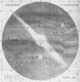
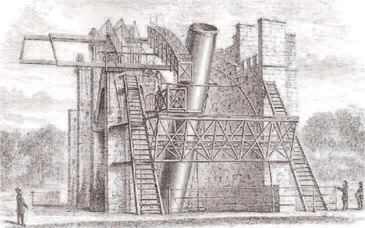
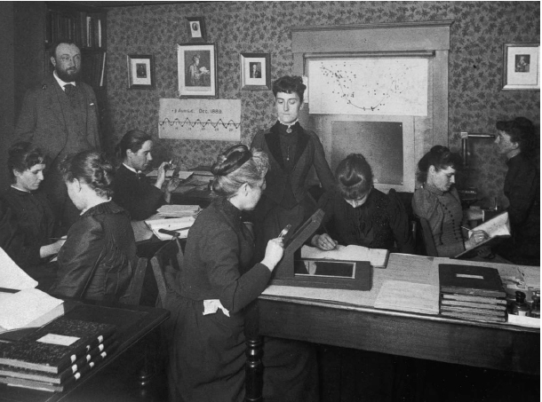
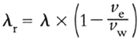

Chapter 3
THE GREAT DEBATE
The known is finite, the unknown is infinite; intellectually we stand on an islet in the midst of an illimitable ocean of inexplicability. Our business in every generation is to reclaim a little more land.
T.H. HUXLEY
The less one knows about the universe, the easier it is to explain.
LEON BRUNSCHVICG
Errors using inadequate data are much less than those using no data at all.
CHARLES BABBAGE
Theories crumble, but good observations never fade.
HARLOW SHAPLEY
First, get the facts, then you can distort them at your leisure.
MARK TWAIN
Heaven wheels above you displaying to you her eternal glories and still your eyes are on the ground.
DANTE

Science consists of two complementary strands, theory and experiment. While theorists consider how the world works and build models of reality, it is the experimentalists who test these models by comparing them with reality. In cosmology, theorists such as Einstein, Friedmann and Lemaître had developed competing models of the universe, but testing them was highly problematic: how do you experiment with the entire universe?
When it comes to conducting experiments, astronomy and cosmology stand apart from the rest of science. Biologists can touch, smell, prod, poke and even taste the organisms they study. Chemists can boil, burn and blend chemicals in a test tube to learn more about their properties. And physicists can easily add mass to a pendulum and vary its length to investigate why it swings the way it does. But astronomers can only stand and stare, for the vast majority of celestial objects are so far away that they can be studied only by detecting the rays of light they send towards the Earth. Instead of actively indulging in a wide range of experiments, astronomers can only passively observe the universe. In other words, astronomers can look, but they can’t touch.
Despite this severe limitation, astronomers have been able to discover an extraordinary amount about the universe and the objects within it. For instance, in 1967 the British astronomer Jocelyn Bell discovered a new type of star known as a pulsating star or pulsar. When she first spotted the regular pulsing light signal on the recording chart, she marked it ‘LGM’, for ‘Little Green Men’, because it seemed like a message broadcast by intelligent life. Today, when she lectures on pulsars, Professor Bell Burnell (as she now is) passes a tiny folded slip of paper around the audience. It says: ‘In picking up this piece of paper you have used thousands of times more energy than all the world’s telescopes have ever received from all the known pulsars.’ In other words, these pulsars radiate energy, like any other star, but they are so distant that astronomers have gathered only a tiny amount of energy from them during decades of intense observation. Nevertheless, even though they are so faint, astronomers have been able to deduce several facts about pulsars. For example, they have worked out that pulsars are stars at the end of their life, are made up of subatomic particles called neutrons, are typically 10 km in diameter and are so dense that one teaspoon of pulsar matter weighs a billion tonnes.
Only when as much information as possible has been gleaned by observation can astronomers begin to examine the models put forth by theorists and test whether they are correct. And in order to test the greatest models of all—the competing Big Bang and eternal universe models—astronomers would have to push their observational technology to the limit. They would have to build giant telescopes containing vast mirrors, housed in observatories the size of huge warehouses, sited on remote mountaintops. Before we examine the discoveries made by the major telescopes of the twentieth century, we first need to look at the evolution of the telescope up to 1900 and see how the earlier instruments contributed to the changing view of the universe.
Staring into Space
After Galileo, the next great pioneer in the design and use of the telescope was Friedrich Wilhelm Herschel, born in Hanover in 1738. He started his working life as a musician, following his father into the Hanoverian Guard as a bandsman, but he considered a change in his career at the Battle of Hastenbeck in 1757, at the height of the Seven Years’ War. He came under heavy fire and decided to abandon his job and country in favour of a quieter life as a musician abroad. He chose to settle in Britain, because the Hanoverian George Louis had ascended the British throne as George I back in 1714, thus establishing the Hanoverian dynasty, and Herschel thought he would receive a sympathetic welcome. He anglicised his name to William Herschel, bought a house in Bath and earned a comfortable living as an excellent oboist, composer, conductor and music teacher. However, as the years passed, Herschel gradually developed an interest in astronomy which evolved from a minor hobby into a major obsession. He eventually became a full-time professional stargazer and would be recognised by his colleagues as the greatest astronomer of the eighteenth century.
Herschel made his most famous discovery in 1781, observing from his garden and using a telescope that he had built from scratch. He identified a new object in the sky that slowly moved over the course of several nights. He assumed that it was a previously undiscovered comet, until it became clear that the object did not possess a tail, and was in fact a new planet, a momentous addition to the Solar System. For thousands of years astronomers had known only of the five other planets (Mercury, Venus, Mars, Jupiter and Saturn) visible to the naked eye, but now Herschel had identified an entirely new world. He named it Georgium Sidus (George’s Star) in honour of his monarch, King George III, a fellow Hanoverian, but French astronomers preferred to call the new planet Herschel after its discoverer. In the end the planet was named after Uranus, the father of Saturn and grandfather of Jupiter in Roman mythology.
Figure 32 William Herschel, the most famous astronomer of the eighteenth century, wrapped up warm for a night of stargazing.
William Herschel, working in his back garden, had succeeded where the lavish court observatories of Europe had failed. His sister Caroline, who acted as his assistant, played a crucial role in helping him to achieve his success. Although a brilliant astronomer in her own right, discovering eight comets during her career, she devoted herself to supporting William. She worked alongside him during the arduous days that he spent building new telescopes, and she would then assist him during the long, freezing nights of observing. As she wrote: ‘Every leisure moment was eagerly snatched at for resuming some work which was in progress, without taking time or changing dress, and many a lace ruffle was torn or bespattered by molten pitch…I was even obliged to feed him by putting the vitals by bits into his mouth.’
The pitch mentioned by Caroline Herschel was used by her brother to make tools for polishing mirrors. Indeed, William took great pride in building his own telescopes. As a telescope-maker he was entirely self-taught, yet he constructed what were then the finest telescopes in the world. One of his telescopes could achieve a magnification of x2,010, whereas the Astronomer Royal’s best telescope could manage only x270.
Magnification is beneficial for any telescope, but even more important is its ability to gather light, and that depends wholly on its aperture, the diameter of the main mirror or lens. Only a few thousand stars are bright enough to be seen with the naked eye, but a telescope with a wide aperture opens up entirely new vistas. A very small telescope, such as the one used by Galileo, will show stars slightly below naked-eye visibility, but no fainter than that regardless of the magnification of the eyepiece. A telescope with a wider aperture will capture, focus and intensify a much greater amount of starlight, so that dimmer, more distant and otherwise invisible stars become visible.
In 1789 Herschel constructed a telescope with a 1.2-metre mirror, giving it the widest aperture of any telescope in the world. Unfortunately it was 12 metres in length, making it so unwieldy that valuable observing time was wasted while the telescope was being manoeuvred to point in the right direction. Another problem was that the mirror had to be strengthened with copper to support its own weight, which meant that it tarnished quickly, negating its otherwise excellent light-gathering potential. Herschel abandoned this monster in 1815, and thereafter used a more moderate telescope for most of his observing, with a 0.475-metre aperture and 6 metres long, a compromise between sensitivity and practicality.
Figure 33 Following his discovery of Uranus, Herschel moved to Slough, which had a finer climate than Bath. He was also closer to his patron, King George III, who had granted him an annual pension of £200 and funded his new record-breaking telescope, 1.2 metres in diameter and 12 metres long.
One of Herschel’s main research projects was to use his superior telescopes to measure the distances to hundreds of stars, using the rough and ready assumption that all stars emit the same amount of light and the fact that brightness falls away with the square of the distance. For example, if one star is 3 times farther away than another star of the same actual brightness, then it will appear to be 1/32 (or 1/9) as bright. Conversely, Herschel assumed that a star that was apparently 1/9 as bright as another star was roughly three times more distant. Using Sirius, the brightest star in the night sky, as his reference star, he defined all his stellar measurements in terms of multiples of the distance to Sirius, a unit he defined as the siriometer. Thus, a star that is apparently 1/49 (or 1/72) as bright as Sirius must be roughly seven times farther away than Sirius, or seven siriometers away. Although Herschel was aware that all stars are probably not equally bright and that his method was therefore inexact, he remained confident that he was building an approximately valid three-dimensional map of the heavens.
While it would be reasonable to expect that the stars would be distributed evenly in all directions and at all distances, Herschel’s data strongly implied that the stars are in fact clumped together in a disc, rather like a flat, round pancake. This gigantic pancake was 1,000 siriometers in diameter and 100 siriometers thick. Instead of occupying an infinite extent of space, the stars of Herschel’s universe were contained within a close-knit community. One way to imagine the distribution of stars is as a pancake that contains a sprinkling of raisins, each one representing a star.
This view of the universe was completely compatible with one of the most famous features of the night sky. If you imagine that we are embedded somewhere within the pancake of stars, then we would see lots of stars to the left, right, ahead and behind, but we would see fewer stars above and below us because the pancake is thin. Hence, from our vantage point in the cosmos we would expect to see a concentration of starlight around us—and indeed such a band can be seen arching across the night sky (as long as you are far from bright city lights). This feature of the heavens was well known to the ancient astronomers. In Latin this band was called Via Lactea, meaning ‘milky way’, because it has a hazy, milky quality. Although it was not apparent to the ancients, the first telescopic generation of astronomers could see that the milky band was actually a concentration of individual stars, too remote to be picked out by the naked eye. These stars are positioned around us in the plane of the pancake formation. Once the pancake model of the universe had been accepted, it was not long before the pancake of stars in which we live became known as the Milky Way.
Because the Milky Way supposedly contained all the stars in the universe, the size of the Milky Way was in effect the size of the universe. Although Herschel had estimated the Milky Way’s diameter and thickness to be 1,000 siriometers and 100 siriometers respectively, he died in 1822 without knowing how many kilometres were in one siriometer. Therefore he had no idea of the size of the Milky Way in absolute terms. Converting siriometers into kilometres would require someone to measure the distance to Sirius. A major step towards this goal took place in 1838, when the German astronomer Friedrich Wilhelm Bessel became the first person to measure the distance to a star.
The puzzle of stellar distances had plagued generations of astronomers, and their failure to solve it had been a thorn in the side of Copernicus’s theory that the Earth orbits the Sun. In Chapter 1 we saw how, if the Earth moves around the Sun, the stars should apparently change their positions when we view them from opposite sides of the Sun, six months apart, an effect known as parallax. Remember, if you hold up your finger and look at it with one eye, then changing your viewpoint by switching to the other eye makes the finger appear to shift against the background. As a rule, as the point of observation shifts, the object being observed seems to shift. However, the stars seemed fixed, a fact that believers in an Earth-centred universe used to support their belief in a fixed Earth. Supporters of the Sun-centred universe countered by pointing out that the stellar parallax effect reduces with distance, so the imperceptible shift in the positions of stars could simply mean that the stars must be incredibly distant.
Friedrich Bessel’s efforts to put solid numbers to the vague phrase ‘incredibly distant’ began in 1810, when the Prussian king, Frederick William III, invited him to construct a new observatory at Königsberg. It would house the finest astronomical instruments in Europe, partly because the British prime minister, William Pitt, had crushed his own country’s glass industry with his punitive window tax, thereby allowing Germany to take over as Europe’s leading telescope manufacturer. German lenses were finely crafted, and a new triple-lens eyepiece arrangement reduced the problem of chromatic aberration, a difficulty in focusing caused by the fact that white light is a combination of colours, each of which is bent differently by glass.
After twenty-eight years at Konigsberg, honing and refining his observations, Bessel eventually made his crucial breakthrough. By taking every conceivable error into account and by making painstaking observations six months apart, he was able to state that a star called 61 Cygni shifted its position by an angle of 0.6272 arcseconds, roughly 0.0001742°. This parallax detected by Bessel was minuscule—the equivalent of what you would perceive if you switched between your two eyes when you were observing your forefinger held up at arm’s length…if your arm were 30 km long!
Figure 34 shows the principle of Bessel’s measurement. When he observed 61 Cygni from the Earth at position A, he did so along a particular line of sight. Six months later, when he observed the star from the Earth at position B, he noticed that his line of sight had shifted slightly. The right-angled triangle formed by the Sun, 61 Cygni and the Earth allowed him to use trigonometry to estimate the distance to the star, because he already knew the Earth-Sun distance and now he knew the angle in one corner of the triangle. Bessel’s measurements implied that the distance to 61 Cygni was 1014 km (100 trillion km). We now know that his measurement was approximately 10% too short, because modern estimates put the distance to 61 Cygni at 1.08 × 1014km, or 720,000 times as far as the distance to the Sun. As explained in the caption to Figure 34, this is equivalent to 11.4 light years.
Figure 34 In 1838, Friedrich Bessel made the first measurement of stellar parallax. As the Earth orbits the Sun and moves from point A to point B, so a nearby star (e.g. 61 Cygni) appears in slightly different positions when viewed from A and B. The distance to 61 Cygni can be measured by simple trigonometry. The acute angle in the right-angled triangle = (0.0001742°÷2) or 0.0000871°, and the short side of the triangle is the Earth–Sun distance.
Hence, Bessel estimated the distance to 61 Cygni to be approximately 100,000,000,000,000 km, and now we know it is 108,000,000,000,000 km.
The kilometre is a very small unit of measurement for stellar distances, so astronomers prefer the light year as their unit of length, defined as the distance covered by light in one year. One year contains 31,557,600 seconds and light travels at 299,792 km/s, so
1 light year = 31,557,600 s x 299,792 km/s
= 9,460,000,000,000 km
This means that 61 Cygni is 11.4 light years from Earth. The light year reminds us that telescopes act as time machines. Because light takes a finite time to travel any distance, we only ever see celestial objects as they were in the past. It takes 8 minutes for sunlight to reach us, so we only ever see the Sun as it was 8 minutes ago. If the Sun suddenly exploded, it would be 8 minutes before we knew about it. The more distant star 61 Cygni is 11.4 light years away, so we only ever see it as it was 11.4 years ago. The farther that telescopes allow us to look across the universe, the farther back in time we are seeing.
The Copernicans were correct. The stars did move, and the stellar ‘jumps’ had hitherto been imperceptible because the stars were so incredibly far away. Even though astronomers knew that the stars had to be very remote, they were still shocked by the sheer distance to 61 Cygni, especially bearing in mind that it is one of the closest stars to the Earth. To put this into perspective, if the universe were miniaturised so that our Solar System, everything from the Sun to the outer reaches of Pluto’s orbit, could be squeezed inside a house, then our neighbouring stars would still be dozens of kilometres away. It became clear that our Milky Way is exceedingly thinly populated.
Bessel’s contemporaries praised his measurement. The German physician and astronomer Wilhelm Olbers said that it ‘put our ideas about the universe for the first time on a sound basis’. Similarly, John Herschel, William Herschel’s son and himself an acclaimed astronomer, called the result ‘the greatest and most glorious triumph which practical astronomy has ever witnessed’.
Not only did astronomers now know the distance to 61 Cygni, but they could also estimate the size of the Milky Way. By comparing the brightness of 61 Cygni to that of Sirius, it was possible to do a ballpark conversion of William Herschel’s siriometer unit into light years, whereupon astronomers estimated that the Milky Way was 10,000 light years across and 1,000 light years thick. In fact, they had underestimated the dimensions of the Milky Way by a factor of ten, and we now know that the Milky Way is about 100,000 light years across and 10,000 light years thick.
Eratosthenes had been shocked when he measured the distance to the Sun, and Bessel had been staggered by the distance to the nearest stars, but the size of the Milky Way was truly overwhelming. At the same time, astronomers realised that even the vastness of the Milky Way was insignificant compared with the assumed infinity of the universe. Not surprisingly, some scientists began to wonder what was going on in the space beyond the Milky Way. Was it completely empty, or was it populated by other objects?
Attention turned to the nebulae, curious smudges of light in the night sky that looked very different from the sharp pinpricks of light from stars. Some astronomers suggested that these mysterious objects were sprinkled throughout the universe. The majority, however, believed that they were more mundane entities within our own Milky Way. After all, William Herschel had indicated that everything was within our pancake-shaped Milky Way.
The study of nebulae dates back to the ancient astronomers, who had spotted a handful of nebulae using just their naked eyes, but then the invention of the telescope revealed a surprisingly large number of them. The first person to compile a detailed catalogue of nebulae was the French astronomer Charles Messier, who started work on this project in 1764. Previously he had already been successful in tracking down comets, which is why King Louis XV nicknamed him the Comet Ferret, but Messier was continually frustrated because, at first sight, it was easy to confuse a comet with a nebula as both types of object appear as tiny smudges in the sky. Comets move across the sky, so they eventually reveal themselves for what they are, but Messier wanted to compile a list of nebulae so that he did not have to waste time mistakenly staring at a static object waiting in vain for it to move. He published a catalogue of 103 nebulae in 1781, and today these objects are still referred to by their Messier numbers; for instance, the Crab Nebula is M1, and the Andromeda Nebula is M31. Messier’s sketch of the Andromeda Nebula is shown in Figure 35.
When William Herschel received a copy of the Messier Catalogue, he turned his gaze upon the nebulae, employing his giant telescopes to conduct an exhaustive search of the heavens. Herschel went far beyond Messier and recorded a total of 2,500 nebulae, and during the course of his survey he began to speculate on their nature. Because they looked like clouds (nebula means ‘cloud’ in Latin), he believed that they were indeed large clouds of gas and dust. More specifically, Herschel could discern a single star within some of these clouds, so suggested that the nebulae were young stars surrounded by debris, and this debris was presumably in the process of coalescing to form planets. All in all, it seemed to Herschel that these nebulae were stars in the early phase of their life and that, like all other stars, they existed within the realm of the Milky Way.
Figure 35 After two decades of observation, Charles Messier published a catalogue of 103 nebulae in 1781. His detailed sketch of the Andromeda Nebula, the 31st entry in his catalogue, illustrates the difference between a nebula, which has a definite extended visible structure, and a star, which appears as a point of light.
While Herschel believed that the Milky Way was the one and only cluster of stars in the whole universe, the eighteenth-century German philosopher Immanuel Kant took the opposite view and argued that at least some of the nebulae were independent groupings of stars, similar to the Milky Way in terms of size, but far beyond its perimeter. According to Kant, the reason why the nebulae looked like clouds was because they contained millions of stars and were so distant that the stars merged into a haze of light. To back his case, he noted that most nebulae had an elliptical appearance, which is exactly what you would expect if they had the same round pancake structure as the Milky Way. Although the Milky Way would look like a circular disc when viewed from above and a thin line when viewed from the side, it would appear elliptical when viewed from an intermediate angle. Kant called the nebulae ‘island worlds’, because he pictured the universe as an ocean of space populated by separate islands of stars. Our Milky Way was just one such island of stars. Today we refer to any such isolated system of stars as a galaxy.
Although Kant’s fondness for the idea of nebulae as galaxies beyond the Milky Way had an observational basis, there was also a theological foundation for his belief. He argued that God was omnipotent, so the universe should be both eternal and infinitely rich in content. It seemed absurd to Kant that God’s creation should be limited to the finite Milky Way:
We come no nearer to the infinitude of the creative power of God, if we enclose the space of its revelation within a sphere described with the radius of the Milky Way, than if we were to limit it to a ball an inch in diameter. All that is finite, whatever has limits and a definite relation to unity, is equally far removed from the infinite…For this reason the field of the revelation of the Divine attributes must be as infinite as these attributes themselves. Eternity is not sufficient to embrace the manifestations of the Supreme Being, if it is not combined with the infinitude of space.
The battle lines had been drawn up. Herschel’s supporters argued that the nebulae were young stars surrounded by clouds of debris and situated within the Milky Way, while the followers of Kant maintained that they were galaxies, independent stellar systems far beyond the Milky Way. The key to settling the debate was better observational evidence, and this began to appear in the middle of the nineteenth century, thanks to the extraordinary William Parsons, the Third Earl of Rosse.
Having married a wealthy heiress and inherited Birr Castle, situated in a large estate in Ireland, Lord Rosse was fortunate in being able to pursue the life of a gentleman scientist. He was determined to build the biggest and best telescope in the world and was not afraid to get his hands dirty. A reporter on the Bristol Times wrote:
I saw the Earl, the telescope maker himself, not in state with his coronet and ermine robe on, but in his shirt sleeves, with his brawny arms bare. He had just quitted the vice at which he had been working and, powdered with steel filings, was washing his hands and face in a coarse ware basin placed on the block of an anvil, while a couple of smiths sledging away on a blazing bar were sending a shower of sparks about his lordship which he little regarded as though he were a Fire King.
Merely casting the mirror for the giant telescope was a major engineering feat in itself. It required 80 cubic metres of peat to melt the ingredients for the 3-tonne mirror, which measured 1.8 metres in diameter. Dr Thomas Romney Robinson, Director of the Armagh Observatory, witnessed the casting:
The sublime beauty can never be forgotten by those who were so fortunate as to be present. Above, the sky, crowned with stars and illuminated by a most brilliant Moon, seemed to look auspiciously on their work. Below, the furnaces poured out huge columns of nearly monochromatic yellow flame, and the ignited crucibles during their passage through the air were fountains of red light.
In 1845, after three years of construction and having spent the equivalent of £1 million of his own money, Lord Rosse completed his gigantic 16.5 metre long telescope, shown in Figure 36, and began making observations. This coincided with the Irish Potato Famine, a tragedy that Rosse had tried to avert when he had earlier advocated new farming practices that would have reduced the risk of potato blight. He quickly halted his survey of the sky and diverted his time and money towards supporting the local community. He also refused to accept rent from his tenants and earned a reputation as an earnest politician who campaigned on behalf of the rural population during this dark period of Irish history.
When Lord Rosse did eventually return to surveying the stars several years later, he would make his observations while precariously perched on the scaffolding that surrounded his magnificent telescope. At the same time, he had to maintain his balance while five labourers worked with mechanical cranks, blocks and pulleys to hoist the telescope to the right elevation. Lord Rosse and his team wrestled with this monster night after night, which is why it was nicknamed the Leviathan of Parsonstown.
Rosse was rewarded for his efforts with spectacular views of the night sky. Johnstone Stoney, Rosse’s assistant, assessed the telescope’s quality by pointing it at very faint stars: ‘Such stars are bright in the great telescope. They are usually seen as balls of light, like small peas, violently boiling in consequence of the atmospheric disturbance…the test bordered very closely indeed on theoretical perfection.’
The only problem was that the Leviathan was sited in the middle of Ireland, which does not have a great reputation for clear, cloudless skies. Apart from the ‘fogs from the bogs’, there were said to be two types of weather, namely ‘just before rain’ or ‘in rain’. On one occasion the patient lord wrote to his wife, explaining: ‘The weather here is still vexatious: but not absolutely repulsive.’

Figure 36 Lord Rosse’s ‘Leviathan of Parsonstown’, with a mighty aperture of 1.8 metres, was the world’s largest telescope when it was built. Parsonstownwas the former name of Birr, the town where the telescope was sited.
Somehow, in between the clouds, Rosse was able to make extraordinarily detailed observations of the nebulae. Instead of appearing as formless smudges, the nebulae began to show themselves as having a distinct internal structure. The first nebula to succumb to the Leviathan was M51 in Messier’s list, which became the subject of an amazingly detailed sketch by Rosse, shown in Figure 37. He could easily discern that M51 had a spiral structure. In particular, he noticed a mini-swirl at the end of one of the spiral arms, which is why M51 was sometimes referred to as Lord Rosse’s Question Mark Nebula. Rosse’s sketch became well known across Europe, and it has even been suggested that it inspired Vincent Van Gogh’s painting Starry Night, which appears to show a spiral nebula with an accompanying swirl.
Its resemblance to a whirlpool gave M51 its other nickname, the Whirlpool Nebula. It also led Rosse to an obvious conclusion: ‘That such a system should exist, without internal movement, seems to be in the highest degree improbable.’ Also, he believed that the swirling mass was more than merely a gaseous cloud: ‘We thus observe, that with each successive increase of optical power, the structure has become more complicated…The nebula itself, however, is pretty well studded with stars.’
It was becoming clear that at least some of the nebulae were collections of stars, but this did not necessarily prove Kant’s theory that the nebulae were galaxies equivalent to and independent from our own Milky Way. Such nebulae would have to be vast, distinct and remote, but perhaps the Whirlpool Nebula was a relatively small subgrouping of stars within or on the edge of our own Milky Way. The critical issue was distance. If somebody could somehow measure the distances to the nebulae, then it would be easy to decide whether they were in the Milky Way, close to the Milky Way or far beyond the Milky Way. But parallax, the best technique for distance measurement, could not be applied to the nebulae. After all, it was barely possible to measure the angular shifts of the closest stars, so identifying any angular shift associated with a fuzzy nebula on the edge of the Milky Way—or perhaps much more distant—was out of the question. The status of the nebulae remained in limbo.
As each decade passed, astronomers invested more money in building increasingly powerful telescopes, situated in high-altitude locations blessed with cloudless skies (unlike Ireland). Although there were other questions on their agenda, astronomers were particularly anxious to discover the true identity of the nebulae, if not by measuring their distance then by finding some other vital clue that would reveal their nature.
Figure 37 Lord Rosse’s drawing of the Whirlpool Nebula (M51),alongside a modern image taken at La Palma Observatory, which shows the power of Rosse’s telescope and the accuracy of his observation.
The next great master telescope-builder was the eccentric millionaire George Ellery Hale, who turned out to be even more obsessive than Lord Rosse. Hale was born in 1868, at 236 North LaSalle Street in Chicago, and in 1870 the family moved to the suburb of Hyde Park, just in time to avoid the Great Chicago Fire of 1871, which consumed 18,000 buildings including their old home. The city became a blank slate for architects, and the nine-storey Home Insurance Building became the world’s first skyscraper, setting a new trend in building design for Chicago and many other American cities. Hale’s father, William, had previously been a struggling salesman, but he was sharp enough to take out a loan and set up a company to supply the elevators necessary for the Chicago skyscrapers. Eventually, he even constructed the elevator for the Eiffel Tower.
The family became wealthy and could afford to indulge young George’s interest in microscopes and telescopes. They were unaware that his childhood fascination would evolve into an adult obsession. In fact, Hale grew up to be a serial world-class telescope-builder. His first major project started when he scavenged some redundant lenses from astronomers on the West Coast who had just abandoned their own plans to build a telescope. Hale’s ambition was to incorporate these lenses in a 40-inch (1-metre) diameter refracting telescope, and he also wanted to build an entire observatory complex around this telescope.
Hale sought funding for his new telescope and observatory from Charles Tyson Yerkes, a transport tycoon who had made his money building Chicago’s elevated rail transit system, which still serves the city today. Yerkes was also a convicted swindler, so Hale tried to persuade him that sponsoring an astronomical observatory would help him to become accepted in Chicago high society. Hale also exploited Yerkes’ penchant for one-upmanship by pointing out that the wealthy land investor James Lick had funded the California Lick Observatory. He began to lobby Yerkes with the slogan ‘Lick the Lick’, because his new telescope would dwarf anything at the Lick Observatory.
Bowled over by Hale’s relentless campaigning, it was not long before Yerkes put up half a million dollars, and the Yerkes Observatory was born as part of the University of Chicago. After the dedication ceremony, one newspaper ran a headline highlighting the swindler’s new-found status: YERKES BREAKS INTO SOCIETY. Unfortunately for Yerkes, the headline was over-optimistic. He still failed to become accepted by the Chicago elite, so he moved to London, where he played a major role in developing the underground train system, particularly the Piccadilly Line.
The Yerkes Observatory was situated 120 km north of Chicago, near the community of Williams Bay. The town still relied on candles and kerosene lamps for lighting, so the astronomers knew that the faint celestial light would not be polluted by bright electric lamps. Even the resort of Lake Geneva, the nearest community with electric lights, was a safe 10 km away. The telescope, 20 metres in length and weighing 6 tonnes, was finished in 1897. It was guided by 20 tonnes of machinery especially designed to point the telescope in the right direction and then to smoothly synchronise it with the rotation of the Earth. In this way the star or nebula under inspection remained in the instrument’s field of view. It was, and still is, the biggest telescope of its type in the world.
Hale, though, was not satisfied. A decade later he raised money from the Carnegie Institute and pushed the limits of engineering even further, building a 60-inch (1.5-metre) telescope at Mount Wilson, near Pasadena in California. This time he would use a mirror rather than a lens, as a 60-inch lens would sag under its own weight. He described his desire for wider, longer and more sensitive telescopes as a symptom of ‘Americanitis’, namely the insatiable ambition to be the very best. Unfortunately, Hale’s compulsive craving for perfection and the responsibility of managing major projects became self-destructive. As a result of the overwhelming stress he suffered periods of psychosis, which ultimately forced him to spend several months in a sanatorium in Maine.
His mental health deteriorated further after he embarked on his third project, a 100-inch (2.5-metre) telescope at Mount Wilson. As the basis for his mirror, Hale ordered a 5-tonne glass disc from France, which the newspapers called the single most valuable piece of merchandise to cross the Atlantic. When it arrived, however, there was concern among Hale’s team about the strength and the optical quality of the glass, which turned out to contain tiny air bubbles. Evelina Hale witnessed the suffering caused to her husband by this latest project and came to hate the giant lens that plagued him: ‘I wish that glass was in the bottom of the sea.’
Figure 38 Andrew Carnegie and George Ellery Hale at Mount Wilson in 1910, outside the dome housing the 60-inch telescope. The millionaire Carnegie (left) is standing farther up the slope to appear taller – a manoeuvre he often performed when he was being photographed with others.
The project seemed doomed to failure, and during periods of extreme pressure Hale would hallucinate and receive visitations from a green elf, who soon became the only person he would confide in about his plans for the telescope. The elf was usually sympathetic, but occasionally it would taunt him. Hale lamented to a friend: ‘How to escape this new form of torment, which is incessant, I do not know.’
Funded by the Los Angeles hardware tycoon John Hooker, the 100-inch Hooker Telescope was eventually completed in 1917. On the night of 1 November, Hale had the honour of being the first person to stare into the eyepiece—and was shocked to see Jupiter overlapped by six ghost planets. Blame for the optical defect was immediately laid on the bubbles in the glass, but calmer minds came up with an alternative theory. Workmen had left the roof of the observatory open that day while they completed installation, so sunlight had been warming the mirror, which had possibly become distorted as a result. The astronomers adjourned until 3 a.m., by which time they hoped that a cooling-off period would have solved the problem. In the chill of the night, Hale’s next view of the heavens was clearer than any previous observation in history The Hooker Telescope was capable of revealing nebulae that previously had been too faint to show up in any other telescope; it was so sensitive that it could have detected a candle at a distance of 15,000 km.
Hale was still not satisfied. Motivated by his guiding principle of ‘More light!’, he began work on a 200-inch (5-metre) telescope. His obsession became infamous and would later be immortalised on television in an episode of The X-Files. Mulder explains to Scully that the elf gave Hale advice on fundraising: ‘Actually the idea was presented to Hale one night while he was playing billiards. An elf climbed in his window and told him to get money from the Rockefeller Foundation for a telescope.’ Scully comments that Mulder must be reassured to know that he is not the only one to see green elves, but Mulder replies: ‘In my case, little green men.’
Sadly, Hale would not live to see his 200-inch telescope project completed. He was, however, able to witness the impact of his 40-inch, 60-inch and 100-inch telescopes, each of which revealed further riches in the sheer number and variety of nebulae. Annoyingly, the exact location of these objects remained a mystery. Were they part of our own Milky Way galaxy, or were they faraway galaxies in their own right?
The matter came to a head in April 1920, when the National Academy of Sciences in Washington planned to host what would become known as the Great Debate. The Academy decided it should bring together the two opposing camps on the nature of nebulae to debate the question in front of the most eminent scientists of the age. The view that the Milky Way contains the entire universe, including the nebulae, was strongly championed by the astronomers at the Mount Wilson Observatory, and they sent an ambitious young astronomer, Harlow Shapley, to argue on their behalf. The opposing view, that the nebulae are galaxies in their own right, was popular at the Lick Observatory, who sent Heber Curtis to defend their position.
By chance, the two rival astronomers ended up sharing the train from California to Washington. It was an awkward and uncomfortable journey—two astronomers with directly opposing views trapped in a railway carriage for 4,000 km, each one careful to avoid prematurely engaging in the debate that was intended for later. The situation was made worse by their contrasting personalities.
Curtis had an aura of superiority and a reputation as a distinguished astronomer, well known for speaking with authority and confidence. He relished the battle to come. In contrast, Shapley was nervous and overawed. Having grown up as the son of a poor hay farmer from Missouri, he had stumbled into astronomy more by luck than by judgement. As a teenager he had wanted to study journalism at college, but the course was cancelled, so he had to find a new subject: ‘I opened the catalogue of courses and the very first course offered was a-r-c-h-a-e-o-l-o-g-y, and I couldn’t pronounce it!…I turned over a page and saw a-s-t-r-o-n-o-m-y; I could pronounce that—and here I am!’
By the year of the Great Debate, Shapley had established himself as part of the new generation of promising astronomers, but he still felt very much in the shadow of Curtis, and was grateful for the opportunity to escape his opponent’s intimidating personality when their Southern Pacific train broke down in Alabama. Shapley spent the time wandering along the tracks in search of ants, which he had studied and collected for many years.
Figure 39 The two main protagonists in the Great Debate: young Harlow Shapley (left), who believed that the nebulae lay within the Milky Way galaxy; and the more senior Heber Curtis, who put forward the case that the nebulae were independent galaxies far beyond the Milky Way.,
When the night of the Great Debate finally arrived, Shapley’s nerves grew worse during the long-winded prize-giving ceremony that preceded the main event. The citations honouring the winners and the acceptance speeches seemed to go on for ever. There was not even a drop of wine to help cheer up proceedings, as prohibition had come into force earlier that year. In the audience, Albert Einstein whispered to his neighbour: ‘I have just got a new theory of Eternity.’
Eventually, the Great Debate took centre stage and the main event of the evening was under way. It began with Shapley arguing the case that the nebulae were within the Milky Way. In his presentation, he relied upon two pieces of evidence to support his view. First, he discussed the distribution of the nebulae. They were generally found above and below the plane of the pancake-shaped Milky Way, but rarely within the plane itself, a band that became known as the zone of avoidance. Shapley explained this situation by claiming that the nebulae were clouds of gas that acted as nurseries for newborn stars and planets. He believed that such clouds existed only in the upper and lower reaches of the Milky Way, drifting towards the central plane as the stars and planets matured. Hence, he could explain the zone of avoidance in terms of the Milky Way being the only galaxy. He then turned to his opponents and claimed that the zone of avoidance was incompatible with their model of the universe: if the nebulae represented galaxies that were peppered throughout the entire universe, they should appear all around the Milky Way.
Shapley’s second piece of evidence was a nova that had appeared in the Andromeda Nebula in 1885. A nova is not, as the name suggests, a new star, but a very dim star that has suddenly increased in brightness, fuelled by material stolen from a companion star. The 1885 nova was one-tenth as bright as the entire Andromeda Nebula, which was perfectly sensible if Andromeda was just a smattering of stars situated within the boundaries of our home galaxy. However, if Andromeda was a galaxy in its own right, as his opponents argued, then it would consist of billions of stars, and the nova (one-tenth as bright as Andromeda) would have been as bright as hundreds of millions of stars! Shapley argued that this was preposterous, and that the only sensible conclusion was that the Andromeda Nebula was not a separate galaxy, but merely part of our Milky Way galaxy.
For some, this level of evidence was more than sufficient. Agnes Clerke, a historian of astronomy, was already aware of Shapley’s arguments and had previously written: ‘No competent thinker, with the whole of the available evidence before him, can now, it is safe to say, maintain any single nebula to be a star system of coordinate rank with the Milky Way.’
However, for Curtis, the matter was far from settled. As far as he was concerned, Shapley’s case was weak, and he attacked his two main arguments. Both men had 35 minutes to present their case, but their styles differed. While Shapley had given a largely non-technical talk, aimed at scientists who came from a variety of disciplines, Curtis presented his riposte with ruthless attention to detail.
With respect to the zone of avoidance, Curtis believed that this was an illusion. He argued that the nebulae, being galaxies, were sprinkled symmetrically all around and way beyond the Milky Way. According to Curtis, the only reason that astronomers could not see many nebulae in the plane of the Milky Way was because their light was blocked by all the stars and interstellar dust that occupy the galactic plane.
When it came to the other pillar of Shapley’s case, the nova of 1885, Curtis dismissed it as abnormal. There were many other novae that had been observed within the spiral arms of nebulae, and they had all been inordinately fainter than the notorious Andromeda nova. In fact, most of the novae observed in nebulae were so extremely faint that, Curtis claimed, this proved that the nebulae must be incredibly distant and beyond the Milky Way. In short, Curtis was not prepared to abandon his cherished model just because of a single bright nova observed thirty-five years earlier. Curtis once said of his unproven multiple galaxy model:
Few greater concepts have ever been formed in the mind of thinking man than this one. Namely that we, the microbic inhabitants of a minor satellite of one of millions of suns which form our galaxy, may look out beyond its confines and behold other similar galaxies, tens of thousands of light-years in diameter, each composed, like ours, of a thousand million or more suns, and that, in so doing, we are penetrating the greater cosmos to distances of from half a million to a hundred million light years.
Curtis put forward various other arguments during his presentation, some supporting his own theory, some attacking Shapley’s. He was confident that he had presented a convincing case and wrote to his family shortly afterwards: ‘Debate went off fine in Washington, and I have been assured that I came out considerably in front.’ The truth is that there was no clear-cut winner, and if there was any slight swing towards Curtis’s point of view, then Shapley attributed it to style rather than substance: ‘As I remember it, I read my paper and Curtis presented his paper, probably not reading much because he was an articulate person and was not scared.’
The Great Debate did little more than focus attention on a question that was far from being resolved. It keenly illustrated the nature of conducting research at the frontiers of science, where competing theories square up to each other, armed only with the feeblest of hard data. The observations used by each side to prop up its own view lacked rigour, detail and volume, and it was far too easy for the opposition to label any data as flawed, inaccurate or open to interpretation. Unless somebody could establish some concrete observations, in particular something that would firmly establish the distance to the nebulae, then the rival theories were nothing more than speculations. The popularity of the theories seemed to depend on the personality of their supporters rather than on any real evidence.
The Great Debate was all about humankind’s place within the cosmos, and settling the matter would require a major breakthrough in astronomy. Some scientists, such as the popular astronomy writer Robert Ball, believed that such a breakthrough was impossible. In The Story of the Heavens, he was of the opinion that astronomers were at the limits of knowledge: ‘We have already reached a point where man’s intellect begins to fail to yield him any more light, and where his imagination has succumbed in the endeavour to realise even the knowledge he has gained.’
Similar statements had probably been made by some ancient Greeks dismissing the possibility of measuring the size of the Earth or the distance to the Sun. However, the first generation of scientists, including Eratosthenes and Anaxagoras, invented techniques that allowed them to span the globe and the Solar System. Then Herschel and Bessel used brightness and parallax to measure the size of the Milky Way and the distance to the stars. Now it was time for someone to invent a yardstick that could cross the cosmos, one that would resolve the true nature of the nebulae.
Now You See It, Now You Don’t
Nathaniel Pigott came from a wealthy and well-connected Yorkshire family, and was a gentleman astronomer of the first order. A close friend of William Herschel, Pigott made careful observations of two solar eclipses and the 1769 transit of Venus. He also constructed one of only three private observatories that existed in England in the late 1700s. Consequently, his son Edward was brought up surrounded by telescopes and other astronomical instruments. Edward developed a fascination with the night sky and in due course he would surpass his father in both his enthusiasm for and expertise in astronomy.
Edward Pigott s main interest was variable stars. Novae are considered to be a class of variable star, because they flare up suddenly after a long period of being relatively faint, and then they gradually fade back to their former dimness. Other stars brighten and fade more regularly, such as Algol in the constellation Perseus, nicknamed the Winking Demon. These variable stars were significant in astronomy because they directly contradicted the ancient view that the stars were immutable, and as a result there was a concerted effort to understand what was driving their fluctuations.
In his twenties, Edward Pigott befriended the teenager John Goodricke. He was a deaf-mute who had developed a keen interest in science, having grown up during a period when educationalists were for the first time addressing the issue of schooling deaf children. He attended Britain’s first school for the deaf, opened in Edinburgh in 1760 by Thomas Braidwood. The school had such an excellent reputation that the author and lexicographer Samuel Johnson paid a visit in 1773, when he may well have encountered Goodricke, who would have been a nine-year-old student at the time. Johnson was particularly interested in educating deaf children, because he had contracted tuberculosis from his wet nurse and had suffered from scarlet fever as a baby, the combined effect of which left him permanently deaf in one ear and partially sighted. Johnson was so impressed with Braidwood Academy that he mentioned it in his Journey to the Western Islands of Scotland:
This school I visited, and found some of the scholars waiting for their master, whom they are said to receive at his entrance with smiling countenances and sparkling eyes, delighted with the hope of new ideas. One of the young Ladies had her slate before her, on which I wrote a question consisting of three figures, to be multiplied by two figures. She looked upon it, and quivering her fingers in a manner which I thought very pretty, but of which I know not whether it was art or play, multiplied the sum regularly in two lines, observing the decimal place.
Then, at the age of fourteen, Goodricke moved from Braidwood to Warrington Academy, where he was able to learn alongside hearing students. His teachers described him as ‘a very tolerable classic and an excellent mathematician’. When he returned home to York he continued his studies under the guidance of Edward Pigott, who taught him about astronomy, and in particular the significance of variable stars.
Goodricke proved to be an extraordinary astronomer. He had developed an unparalleled visual acuity and sensitivity, and was able to evaluate with great precision how the brightness of a variable star changed from night to night. This was an amazing achievement, because he had to take into consideration the effects of atmospheric conditions and the varying level of moonlight to obtain a sufficient degree of accuracy. To help him gauge the brightness of a variable star, Goodricke compared it with the fixed brightnesses of surrounding non-variable stars. One of his first research projects was to observe the subtle winks of Algol from November 1782 to May 1783, carefully plotting a graph of brightness versus time, showing that it reached minimum brilliance every 68 hours and 50 minutes. The variation of Algol is shown in Figure 40.
Goodricke’s brain was as sharp as his sight. By studying the pattern of variation in Algol’s brightness, he deduced that it was not a lone star, but a binary star—a pair of stars orbiting each other, which we now know to be a relatively common situation for stars. In the case of Algol, Goodricke proposed that one star was much dimmer than the other and that the variability in overall brightness was a result of the dim star passing in front of the bright star and blocking its light during their mutual orbiting. In other words, the variability was an eclipsing effect.
Goodricke was just eighteen years old, and absolutely correct in his analysis of Algol—the pattern was symmetric and an eclipse is a symmetrical process, and the star system was generally bright and with a relatively short dim phase, which again was typical of an eclipsing system. In fact, a large proportion of variable stars can be explained in this way. His work was recognised by the Royal Society, which awarded him the prestigious Copley Medal for the year’s most significant discovery in science. Three years earlier it had been won by William Herschel, and in later years it would be awarded to Dmitri Mendeleev for developing the periodic table, to Einstein for his work on relativity, and to Francis Crick and James Watson for unravelling the secret of DNA.
Figure 40 The variation in the brightness of the star Algol is symmetric and periodic, with a minimum brightness every 68 hours and 50 minutes.
The phenomenon of eclipsing binary stars was a major discovery in the history of astronomy, but it would play no role in the drama of the nebulae. Instead, it was a set of observations made by Goodricke and Pigott in 1784 which would ultimately resolve the Great Debate that was to come. On the night of 10 September, Pigott observed that the star Eta Aquilae varied in brightness. A month later, on 10 October, Goodricke spotted that Delta Cephei was also varying. Nobody had previously noticed the variability of these stars, but Pigott and Goodricke had a knack for detecting subtle changes in brightness. Goodricke plotted the variation of both stars with time and showed that Eta Aquilae repeated its pattern every seven days, whereas Delta Cephei took just five days, so both had a distinctly longer period of variation compared to Algol. What made Eta Aquilae and Delta Cephei even more remarkable was the overall shape of their variations in brightness.
Figure 41 The variable brightness of the star Delta Cephei. The variation is asymmetric, increasing in brightness quickly and decreasing slowly.
Figure 41 shows a plot of Delta Cephei’s variation. The most striking feature is the lack of symmetry. Whereas the Algol plot (Figure 40) displays a series of thin, symmetric valleys, Delta Cephei ramps up to peak brightness in just a day and then gradually fades to a minimum over the course of four days. Eta Aquilae showed a similar sawtooth or shark’s-fin pattern. This pattern cannot be explained by any sort of eclipse effect, so the two young men assumed that there must be something intrinsic to the two stars that was causing the variation. They decided that Eta Aquilae and Delta Cephei belonged to a new class of variable star, which we now call Cepheid variables, or simply Cepheids. Some Cepheids are very subtle, such as Polaris, the North Star, which is our closest Cepheid. William Shakespeare was completely unaware of the star’s variable nature, and in Julius Caesar he has Caesar proclaim: ‘But I am constant as the Northern Star.’ Although this star is constant inasmuch as it always indicates north, its luminosity varies and it grows slightly brighter and dimmer roughly every four nights.
Today we know what goes on inside a Cepheid variable star, what causes its asymmetric variability and what makes it different from other stars. Most stars are in a state of stable equilibrium, which essentially means that the huge mass of a star wants to collapse in on itself under the force of gravity, but this is counteracted by the outward pressure caused by the intense heat of the material within the star. It is a bit like a balloon, which is in equilibrium because the rubber skin on the outside wants to contract inwards, while the air pressure on the inside wants to push outwards. Put the balloon in a fridge overnight, and the air in the balloon cools, the air pressure inside the balloon decreases and the balloon contracts to find a new equilibrium state.
However, Cepheid variable stars are not in a stable equilibrium, but fluctuate. When a Cepheid is relatively cool, it is unable to counteract the gravitational force, which will then cause the star to contract. This compresses the fuel in the stellar core and encourages more energy to be generated, which heats the star, forcing it to expand. Energy is released during and after the expansion, whereupon the star cools and contracts, and the process repeats itself all over again. Crucially, the contraction phase compresses the outer layer of the star, which causes it to become more opaque, resulting in the dimming phase of the Cepheid.
Although Goodricke was unaware of the explanation behind the variability of Cepheids, the discovery of this new type of star was in itself a great achievement. At the age of just twenty-one, a new honour was bestowed on him: he was made a Fellow of the Royal Society. Then, just fourteen days later, the life of this brilliant young astronomer was cut short. Goodricke died of pneumonia, contracted during long freezing nights spent staring at the stars. His friend and collaborator Pigott lamented: ‘This worthy young man exists no more; he is not only regretted to many friends, but will prove a loss to astronomy, as the discoveries he so rapidly made evince.’ In a career lasting just a few years, Goodricke had made an outstanding contribution to astronomy. Although he did not realise it, his discovery of Cepheid variables would prove pivotal to the Great Debate and to the development of cosmology.
Over the next century, Cepheid spotters would discover thirty-three stars with the distinctive shark’s-fin variation. Each one increased and decreased its brightness, sometimes over the course of less than a week, sometimes taking more than a month. However, one problem plagued the study of Cepheids, namely subjectivity. Indeed, this major problem was common throughout astronomy. If observers saw something in the sky, they would inevitably interpret it with some level of bias, especially if the phenomenon was fleeting and the interpretation relied on memory. Also, the observation could only be recorded in words or a sketch, neither of which could be relied upon for perfect accuracy.
Then, in 1839, Louis Daguerre released details of the daguerreotype, a process for chemically imprinting an image on a metal plate. Suddenly, daguerreomania swept the world, with people queuing up to be photographed. As with every new technology, there were some critics, as demonstrated by this extract from the Leipzig City Advertiser : ‘The wish to capture evanescent reflections is not only impossible … but the mere desire alone, the will to do so, is blasphemy. God created man in His own image, and no man-made machine may fix the image of God. Is it possible that God should have abandoned His eternal principles, and allowed a Frenchman to give to the world an invention of the Devil?’
John Herschel, son of William and now president of the Royal Astronomical Society, was one of the first people to adopt this new technology. Within a few weeks of Daguerre’s announcement, he was able to replicate the process and took the first photograph on glass (Figure 42), which showed his father’s biggest telescope shortly before it was dismantled. He went on to make enormous contributions to improving the photographic process, and coined the words ‘photograph’ and ‘snapshot’, along with other photographic terms such as ‘positive’ and ‘negative’. In fact, Herschel was just one of many astronomers who pushed photography to the limit and developed new photographic technology in an effort to capture the very faintest celestial objects.
Photography provided astronomers with the objectivity that they had been searching for. When Herschel tried to describe the brightness of a star, he had previously had to write: ‘Alpha Hydrae much inferior to Gamma Leonis, rather inferior to Beta Aurigae.’ Such vague jottings could now be replaced with a more objective and accurate photograph.
Figure 42 Sir John Herschel, son of William Herschel, by the celebrated portrait photographer Julia Margaret Cameron. Alongside is the very first photograph on glass, taken by John Herschel himself in 1839. It shows an image of his father’s telescope, also shown as an etching in Figure 33 (p. 172).
Despite the advantages of photography, there was a certain level of suspicion from traditionalists who worried about the implications of this new technology. Sketching astronomers were wary that the technology would introduce new features into the night sky that were merely artefacts of the chemical process. For example, might some chemical residue be misinterpreted as a nebula? Henceforth, any reported observation had to be labelled either ‘visual’ or ‘photographic’ so that its provenance was unambiguous.
Once the technique had matured and natural conservatism had subsided, it was generally accepted that photographs were the best method for recording observations. In 1900, an astronomer at the Princeton Observatory argued that photographs provided ‘a record that is permanent, authentic, and free from the personal bias of an imagination and hypothesis, which so seriously impairs the authority of many ocular observations’.
Photography proved to be an invaluable technology for recording observations accurately and objectively, but equally important was its power to detect previously invisible objects. If a telescope is pointed at a very distant object, then the light that reaches the human eye might be too feeble to be perceived, even if the telescope has a wide aperture. If, however, the eye is replaced with a photographic plate, then it can be exposed for several minutes or even hours, capturing more and more light as time goes by. The human eye absorbs light, processes it and disposes of it in an instant, and then it starts from scratch all over again, whereas the photographic plate keeps on accumulating light, building up an image that gets stronger over time.
In summary, the eye has a limited sensitivity, a telescope with a wide aperture boosts that sensitivity, and that same telescope coupled with a photographic plate is even more sensitive. For example, the Pleiades (or Seven Sisters) star cluster contains seven stars visible to the naked eye, but Galileo with his telescope could see forty-seven stars in this region. In the late 1880s, the French brothers Paul and Prosper Henry took a long photographic exposure of that part of the sky and counted 2,326 stars.
At the centre of the photographic revolution in astronomy was the Harvard College Observatory, partly thanks to its first director, William Cranch Bond, who had taken the first daguerreotype of a star at night, Vega, back in 1850. Also, the amateur astronomer Henry Draper, whose father John Draper had taken the first photograph of the Moon, bequeathed his personal fortune to Harvard in order to photograph and catalogue all the observable stars.
This allowed Edward Pickering, who became director of the observatory in 1877, to initiate a relentless programme of celestial photography. The observatory would take half a million photographic plates in the decades to come, so one of Pickering’s biggest challenges was to establish an industrial-scale system for analysing the photographs. Each plate contained hundreds of stars, and each speck would need to have its brightness evaluated and its location measured. Pickering recruited a team of young men to work as computers, a term that was originally used to describe people who manipulated data and performed calculations.
Unfortunately, he soon became frustrated because of his team’s lack of concentration and failure to pay attention to detail. One day, when his patience had been exhausted, he blurted out that his Scotch maid could do a better job. To prove his point, he sacked his allmale team, hired women computers to replace them and put his maid in charge.Williamina Fleming had been a teacher in Scotland before emigrating to America, where she had been abandoned by her husband when pregnant, forcing her to take a job as a housekeeper. Now she was leading a team nicknamed ‘Pickering’s harem’ and scrutinising the world’s largest set of astronomical images.
Pickering is generally respected for his liberal recruitment policy, but to some extent he was motivated by practical issues.The women were generally more accurate and meticulous than the men they replaced, and they also tolerated being paid between 25 and 30 cents per hour, whereas the men had demanded 50 cents. Also, the women were restricted to the role of computers and were denied the opportunity to make observations themselves. This was partly because the telescopes were housed in cold, dark observatories, which were considered unsuitable for the fairer sex, and partly because Victorian sensitivities would have been offended by the thought of a man and a woman working together late into the night, staring up at the romantic array of stars. But at least the women could now examine the photographic results of night-time observations and contribute to astronomy, a discipline that had largely excluded them in the past.

Figure 43 The Harvard ‘computers’ at work, busy examining photographic plates while Edward Pickering and Williamina Fleming watch over them. On the back wall are two plots that show the oscillating brightness of stars.
Although Williamina Fleming’s team of women computers were supposed to focus on the drudgery of harvesting data from the photographs so that the male astronomers could conduct the research, it was not long before they were reaching their own scientific conclusions. Endless days spent staring at the photographic plates had given them an intimate familiarity with the stellar objects that they were surveying.
For example, Annie Jump Cannon catalogued roughly 5,000 stars per month between 1911 and 1915, calculating the location, brightness and colour of each one. She drew upon her hands-on experience to make a major contribution to the system of stellar classification, dividing stars into seven classes (O, B, A, F, G, K, M). Today’s astronomy undergraduates still learn this system of stellar classification, usually according to the mnemonic ‘Oh, Be A Fine Guy – Kiss Me!’ In 1925 Cannon became the first woman to receive an honorary doctorate from Oxford University, in recognition of this insightful and painstaking work. She was voted one of the twelve greatest American women in 1931, and in the same year became the first woman to receive the prestigious Draper Gold Medal from the American National Academy of Sciences.
Cannon had been struck down by scarlet fever as a child, which left her almost completely deaf, just like the Cepheid pioneer John Goodricke. It seems likely that they had both compensated for their loss of hearing by sharpening their sense of sight, thus allowing them to pick up fine details that had been missed by others. The most famous member of Pickering’s team, Henrietta Leavitt, was also profoundly deaf. It was Leavitt who spotted features in the photographic plates that would settle the Great Debate once and for all. She would enable astronomers to measure the distance to the nebulae, and her discovery would influence cosmology for decades to come.
Leavitt was born in 1868 in Lancaster, Massachusetts, the daughter of a Congregational minister. Professor Solon Bailey, who knew her at the Harvard College Observatory, recalled how her character was shaped by her religious upbringing:
She was a devoted member of her intimate family circle, unselfishly considerate in her friendships, steadfastly loyal to her principles, and deeply conscientious and sincere in her attachment to her religion and church. She had the happy faculty of appreciating all that was worthy and lovable in others, and was possessed of a nature so full of sunshine that, to her, all of life became beautiful and full of meaning.
In 1892, Leavitt graduated from Harvard University’s Radcliffe College, which at the time was known as the Society for the Collegiate Instruction of Women. For the next two years she remained housebound, recovering from a serious illness, possibly meningitis, that caused her loss of hearing. Once she had regained her strength she became a volunteer at the Harvard College Observatory, sifting through the plates and searching for variable stars, which she had been designated to catalogue. Photography had transformed the study of variable stars, because two photographic glass plates taken on different nights could be overlaid and directly compared, making it much easier to spot any variations in brightness. Leavitt made the most of this burgeoning technology and would discover more than 2,400 variable stars, about half of the total known in her day. Professor Charles Young of Princeton University was so impressed that he called her ‘a variable-star fiend’.
Of the various types of variable star, Leavitt developed a particular passion for Cepheids. After months spent measuring and cataloguing Cepheid variables, she yearned to gain some understanding of what determined the rhythm of their fluctuations. In an effort to solve the mystery she turned her attention to the only two firm pieces of information available for any Cepheid variable: its period of variation and its brightness. Ideally, she wanted to see whether there was any relationship between period and brightness – perhaps brighter stars might prove to have a longer period of variation than dimmer stars, or vice versa. Unfortunately, it seemed virtually impossible to make any sense of the brightness data. For example, an apparently bright Cepheid might actually be a dim star that was close by, while an apparently dim Cepheid might actually be a bright star that was far away.

Figure 44 Henrietta Leavitt, who rose from being an unpaid volunteer at Harvard College Observatory to make one of the most important breakthroughs in twentieth-century astronomy
Astronomers had long ago realised that they could perceive only the apparent brightness of a star, as opposed to its actual brightness. The situation seemed hopeless, and most astronomers would have given up, but Leavitt’s patience, dedication and concentration led her to a rather cunning and brilliant idea. She made her breakthrough by focusing her attention on the stellar formation known as the Small Magellanic Cloud, named after the sixteenth-century explorer Ferdinand Magellan, who recorded it when he sailed the southern oceans while circumnavigating the globe. Because the Small Magellanic Cloud is visible only from the southern hemisphere, Leavitt had to rely on photographs taken at Harvard’s southern station at Arequipa in Peru. Leavitt managed to identify twenty-five Cepheid variables within the Small Magellanic Cloud. She did not know the distance from the Earth to the Small Magellanic Cloud, but she suspected that it was relatively far away and that the Cepheids within it were relatively close together. In other words, all twenty-five Cepheids were more or less at the same distance from the Earth. Suddenly, Leavitt had exactly what she needed. If the Cepheids in the Small Magellanic Cloud were all roughly the same distance away, then if one Cepheid was brighter than another it was because it was intrinsically more luminous, not just apparently brighter.
The assumption that the stars in the Small Magellanic Cloud were roughly equidistant from the Earth was something of a leap of faith, but a very reasonable one. Leavitt’s line of thinking was akin to an observer seeing a flock of twenty-five birds in the sky and assuming that the distance between each one is relatively small compared with the distance between the observer and the entire flock. Hence, if one bird seems smaller than the others, then it probably is genuinely smaller. However, if you saw twenty-five birds spread around the sky and one seemed smaller than the others, then you could not be sure whether that bird was genuinely smaller or just farther away.
Leavitt was now ready to explore the brightness versus period relationship for Cepheids. Building on the assumption that the apparent brightness of each Cepheid in the Small Magellanic Cloud was a true indication of its actual brightness in relation to the other Cepheids in the Cloud, Leavitt plotted a graph of the apparent brightness against the period of variation for the twenty-five Cepheid stars. The result was astonishing. Figure 45(a) shows how Cepheids that fluctuate over a longer period are typically brighter, and even more importantly, the data points generally seem to follow a smooth curve. Figure 45(b) shows the same data but with a change of scale for the period of variation, which reveals more clearly the relationship between brightness and period. In 1912 Leavitt announced her conclusion: ‘A straight line can be readily drawn among each of the two series of points corresponding to maxima and minima, thus showing that there is a simple relation between the brightnesses of the variables and their periods.’
Leavitt had discovered a strict mathematical relationship between the true luminosity of a Cepheid and the period of its variations in apparent brightness: the higher the luminosity of the Cepheid, the longer the period between the peaks in brightness. Leavitt was confident that this rule could be applied to any Cepheid variable star in the universe, and that her graph could be extended to include Cepheids with very long periods. This was a staggering result, pregnant with cosmic repercussions, but it was published with the understated title ‘Periods of 25 Variable Stars in the Small Magellanic Cloud’.
The power of Leavitt’s discovery was that it was now possible to compare any two Cepheids in the sky and work out their relative distances from the Earth. For example, if she could find two Cepheids in different parts of the sky that both varied with very similar periods, then she knew that they would be shining approximately as brightly as each other—the plot in Figure 45 predicted that a certain period implied a certain inherent brightness. So, if one of those stars appeared to be 9 times fainter than the other, then it must be farther away. Indeed, if it was 9 times fainter, then it must be exactly 3 times farther away, because brightness fades as the square of the distance and 32 = 9. Or if one of the Cepheids appeared to be 144 times fainter than another with a very similar period, then it must be 12 times as distant, because 122 = 144.
Figure 45 These two graphs show Henrietta Leavitt’s observations of Cepheid variable stars in the Small Magellanic Cloud. Graph (a) is a plot of brightness (on the vertical axis) against period, measured in days (on the horizontal axis), and each point represents a Cepheid. There are two lines in the plot: one represents the maximum brightness and the other the minimum brightness of each variable star.
To help interpret the graph, the points that are circled represent a Cepheid with a period of roughly 65 days and its brightness varies between 11.4 and 12.8. A pair of smooth curves can be drawn through the data points. Not every point sits exactly on its curve, but if allowance is made for errors, the curves do seem to be a valid fit to the data.
Stellar brightness is measured in terms of magnitude, which is an unusual unit of measurement because the brighter the star, the lower the magnitude, which is why the vertical scale runs from 16 up to 11. Also, magnitude is measured on a logarithmic scale. It is not necessary for our purposes to define a logarithmic scale; all we need to know is that the relationship between brightness and period of variation becomes clearer if the period is also plotted on a logarithmic scale, as in graph (b). The points now all lie reasonably close to a pair of straight lines, which indicates that there is a simple mathematical relationship between a Cepheid’s period of variability and its brightness.
But although astronomers could use Leavitt’s graph to calibrate Cepheid brightness and establish the relative distance between any two Cepheids, as yet they did not know the absolute distance for any of them. They could prove that one Cepheid was, say, 12 times farther away than another, but that was all. If only the distance to just one Cepheid variable star could be found, then it would be possible to anchor Leavitt’s measurement scale and gauge the distance to every single Cepheid.
The decisive observations that made this possible and thereby calibrated the Cepheid distance scale were achieved thanks to a team effort by astronomers who included Harlow Shapley and Denmark’s Ejnar Hertzsprung. Together they used a combination of techniques, including parallax, to measure the distance to one Cepheid variable, which then transformed Leavitt’s research into the ultimate distance guide for the cosmos. Cepheid variables could act as a yardstick for the universe.
In summary, an astronomer could now measure the distance to any Cepheid by a simple three-step process. First, see how quickly it varies, which reveals how bright it really is. Second, see how bright it appears to be. And third, work out what distance would turn the actual brightness into the apparent brightness.
As a crude analogy, picture the pulsing Cepheid stars as flashing lighthouses. Imagine that the speed at which a lighthouse flashes depends on its brightness (just like a Cepheid star), so a 3 kW lighthouse flashes three times per minute and a 5 kW lighthouse flashes five times per minute. If a sailor at sea on a dark night sees a lighthouse flashing in the distance, he can gauge the distance to it by the same three-step process. First, he counts the frequency of the flashing, which immediately gives him the true brightness of the lighthouse. Second, he sees how bright it appears to be. And third, he works out what distance would turn the actual brightness into the apparent brightness.
Also, the sailor can estimate the distance from his ship to a seaside village which is along the same line of sight as the lighthouse, because he can assume that the village is roughly as far away as the distance he has already worked out for the lighthouse. It could be that the village is set back a long way from the coast and far from the lighthouse, or that the lighthouse is located some way out to sea on a rocky outcrop and some distance from the village, but in general the lighthouse will be close to the village and the estimate will be fairly accurate. Similarly, an astronomer who works out the distance to a Cepheid variable also knows the rough distance to any other stars in its vicinity. The method is not foolproof, but it is effective in most cases.
Professor Gösta Mittag-Leffler of the Swedish Academy of Sciences was so impressed by Leavitt and the power of her Cepheid yardstick that in 1924 he started on the paperwork that would be needed to nominate her for a Nobel prize. However, when he began to research Leavitt’s current scientific interests he was shocked to find that she had died of cancer three years earlier, on 12 December 1921, at the age of just fifty-three. Leavitt was not an astronomer with a high profile who travelled the world giving seminars, but rather a humble researcher who quietly and diligently studied her photographic plates, so her passing went virtually unnoticed in Europe. Not only did she not live long enough to receive the recognition she deserved, she never witnessed the decisive impact of her work on the Great Debate over the nature of the nebulae.
The Titan Astronomer
The astronomer who would fully exploit the potential of Leavitt’s discovery was Edwin Powell Hubble, arguably the most famous astronomer of his generation. He was born in Missouri in 1889, the son of John and Jennie Hubble, who had met when John was seriously injured in a farming accident and Jennie, the local doctor’s daughter, had the job of nursing him back to health. He was so bloody and battered that she said that she ‘never wanted to see John Hubble again’. But as he recovered she fell in love with him, and they married in 1884.
Edwin had a largely happy childhood, except for one traumatic incident when he was seven years old. He and his brother Bill had come to resent their fourteen-month-old attention-grabbing sister Virginia, and they decided to get their own back by deliberately stepping on her fingers to make her cry. A few days later she came down with a severe undiagnosed illness, which proved to be fatal. Confused and distraught, Edwin blamed himself, even though Virginia’s illness was unrelated to his earlier actions. As one of his siblings recalled: ‘Edwin became psychologically ill and had it not been for his very understanding and intelligent parents, this paranoia might have caused another tragedy in the family.’ Edwin was particularly close to his mother, and it was she who helped him through this disturbing episode in his childhood.
Edwin also developed a close relationship with his grandfather, Martin Hubble, who introduced him to astronomy by building him a telescope for his eighth birthday. Martin would persuade the boy’s parents to let Edwin stay up late into the night to stare at the myriad stellar specks in the black Missouri sky. He became so fascinated by the stars and planets that he was inspired to write an article about Mars, which was published in his local newspaper while he was still a high-school student. His teacher, Miss Harriet Grote, recognised Edwin’s escalating enthusiasm for astronomy: ‘Edwin Hubble will be one of the most brilliant men of his generation.’ Probably every teacher says much the same about their favourite pupil, but in Edwin’s case he would truly fulfil Miss Grote’s prediction.
Hubble went on to study at Wheaton College, hoping to earn a scholarship to a major university. At the graduation ceremony, where such scholarships were announced, the superintendent shocked Hubble by proclaiming: ‘Edwin Hubble, I have watched you for four years and I have never seen you study for ten minutes.’ After a dramatic pause worthy of the greatest of thespians, he continued: ‘Here is a scholarship to the University of Chicago.’
Hubble had planned to study astronomy at Chicago, but his forceful father compelled him to pursue a degree in law because of the steady income it would guarantee. As a young man, John Hubble had struggled to earn a decent wage, and he gained financial security only later in life when he became an insurance salesman. He took great pride in the profession that had made the Hubbies a respectable middle-class family: ‘The best definition we have found for civilisation is that a civilised man does what is best for all, while the savage does what is best for himself. Civilisation is but a huge mutual insurance company against human selfishness.’
Edwin resolved the conflict between his own ambition and his father’s pragmatism by formally studying law to pacify his father, while also completing enough courses in physics to keep alive his dream of becoming an astronomer. The Chicago physics department was headed by Albert Michelson, who had dispensed with the ether and won America’s first Nobel Prize for Physics in 1907. The university was also home to Robert Millikan, who would go on to become America’s second Nobel Laureate in physics, and who took on Hubble as his part-time laboratory assistant while Edwin was still an undergraduate. This was a brief but pivotal relationship, because Millikan helped to propel Hubble towards his next goal, a Rhodes scholarship to study at Oxford University.
Figure 46 Edwin Powell Hubble, the greatest observational astronomer of his generation, puffing at his trademark briar pipe.
The Rhodes scholarships were established in 1903 and funded from the fortune of the Victorian empire-builder Cecil Rhodes, who had died the previous year. They were awarded to young Americans who displayed both strength of character and intellect. George Parker, who helped to administer the scheme, said that the thirty-two scholarships were for those ‘likely to become President of the United States, Chief Justice of the Supreme Court, or American Ambassador to Great Britain’. Millikan duly gave Hubble a first-class recommendation:‘I find Hubble a man of magnificent physique, admirable scholarship, and worthy and loveable character…Seldom have I known a man who seemed to be better qualified to meet the conditions imposed by the founder of the Rhodes scholarships than is Mr. Hubble.’ Thanks to this endorsement from one of America’s best-known scientists, Hubble achieved his goal of a Rhodes scholarship and left for England in September 1910. The only disappointment for Hubble was that, through paternal pressure, his main subject at Oxford was still supposed to be law.
During his two years at Oxford, Hubble became an extreme Anglophile, adopting everything from an English dress sense to an aristocratic accent. Fellow Rhodes scholar Warren Ault was unpleasantly surprised when he encountered Hubble towards the end of his time in Britain: ‘He was dressed in plus-fours, a Norfolk jacket with leather buttons, and a huge cap. He also sported a cane and spoke in a British accent I could scarcely understand…Those two years had transformed him, seemingly, into a phoney Englishman, as phoney as his accent.’ Jakob Larsen of Iowa, who was with Hubble at Queen’s College, was similarly unimpressed: ‘We laughed at his effort to acquire an extreme English pronunciation while the rest of us tried to keep the pronunciation we brought from home. We always claimed that he could not be consistent, so that he might take a bāth in a băth tub.’
Hubble’s time in England came to an abrupt end when his father became seriously ill and died on 19 January 1913. He was forced to return home, still sporting his Oxford cape and fake English accent, and took on the responsibility of supporting his mother and four siblings, whose suffering had been compounded by a collapse in the family’s financial investments. Hubble worked as a high-school teacher and managed to get some part-time legal work for the next eighteen months, which was enough to put the family’s finances back on a firm footing. Thereafter, having done his duty to his family, and now liberated from his misguided, domineering father, Hubble was suddenly free to follow his childhood dream of becoming an astronomer. ‘Astronomy is something like the ministry,’ he once said. ‘No one should go into it without a call. I got that unmistakable call, and I knew that even if I were second rate or third rate, it was astronomy that mattered.’ He reiterated the point in a remark that seemed aimed at his late father: ‘I would much rather be a second-rate astronomer than a first-rate lawyer.’
Hubble began to make up for the time he had wasted in legal lectures and set off on the long road to becoming a professional astronomer. Thanks to his scientific connections at the University of Chicago, he obtained a graduate position at the nearby Yerkes Observatory, the site of Hale’s first great telescope. He went on to complete his Ph.D., a survey of nebulae, which he sometimes called by their German name, nebelflecken. Hubble knew that his thesis was a solid piece of work but not an inspired one: ‘It does not add appreciably to the sum total of human knowledge. Some day I hope to study the nature of these nebelflecken to some purpose.’
To achieve this particular goal, Hubble realised that he had to obtain a research post at whichever observatory had the best telescopes. He once said: ‘Equipped with his five senses, man explores the universe around him and calls the adventure science.’ The key sense for astronomers is vision and whoever had access to the best telescope would see farthest and clearest. Mount Wilson was therefore the place to be: it already boasted the great 60-inch telescope, and the even greater 100-inch telescope would soon be completed. As it happened, the California observatory was already aware of Hubble’s potential and was keen to headhunt him, so he was delighted when he received a job offer from Mount Wilson in November 1916. The appointment was delayed, because by this time America had entered the First World War, and Hubble felt duty bound to help defend Britain, the country he loved so much. He arrived in Europe too late to be involved in combat, but stayed on for four months after the war as part of the occupation forces in Germany. He postponed his return to America to undertake a long tour of his beloved England, and eventually arrived at the Mount Wilson Observatory in the autumn of 1919.
Although he was still a junior astronomer with relatively little experience, Hubble was soon a conspicuous figure at the observatory. One of his assistants gave a vivid description of Hubble as he stood taking photographs with the 60-inch telescope:
His tall, vigorous figure, pipe in mouth, was clearly outlined against the sky. A brisk wind whipped his military trench coat around his body and occasionally blew sparks from his pipe into the darkness of the dome. ‘Seeing’ that night was rated as extremely poor on our Mount Wilson scale, but when Hubble came back from developing his plate in the dark room he was jubilant.‘If this is a sample of poor seeing conditions,’ he said, ‘I shall always be able to get usable photographs with the Mount Wilson instruments.’ The confidence and enthusiasm which he showed on that night were typical of the way he approached all his problems. He was sure of himself—of what he wanted to do, and of how to do it.
When it came to the Great Debate, Hubble sympathised with the view that the nebulae were independent galaxies. This was slightly embarrassing, because Mount Wilson was dominated by astronomers who believed that the Milky Way was the only galaxy and that the nebulae lay within it. In particular, Harlow Shapley, who had defended the single galaxy theory in Washington, took great exception to the new boy, to his views and his demeanour. Shapley’s own humble manner was completely at odds with a man who was fixated by the English aristocracy, who sported an Oxford tweed jacket and who called out ‘By Jove!’ and ‘What ho!’ several times a day. Hubble liked to be the centre of attention. He took great delight in being able to light a match, flip it in the air through 360°, catch it and light his briar pipe. He was the consummate showman, whereas Shapley was quite the opposite and disdained such exhibitionism. Worst of all for Shapley, who had argued vehemently against America entering the war, Hubble persisted in wearing his army trench coat around the observatory.
Figure 47 Edwin Hubble (left) next to the 100-inch Hooker Telescope at Mount Wilson Observatory. Figure 48 shows the whole telescope.
The constant clash of personalities ended in 1921, when Shapley left Mount Wilson to become director of the Harvard Observatory. This was definitely a promotion for Shapley, partly in recognition of his leading role in the as yet unresolved Great Debate, but moving to the East Coast turned out to be a disaster. Although he had escaped Hubble and taken up a prestigious directorship, Shapley had also left behind the observatory that would dominate astronomy for four decades. Mount Wilson possessed the world’s most powerful telescopes, and was destined to be the observatory that would make the next great breakthrough in astronomy.
Hubble moved up the pecking order, gradually obtained more telescope time and committed himself to taking the best possible pictures of the nebulae. Whenever his name was on the observing schedule, he would make the journey up the steep, winding road that led to the 1,740-metre peak of Mount Wilson, where he would spend a few days living in the aptly named Monastery, the male-only residence for those who had abandoned contact with the outside world to devote themselves to staring into space.
This might give the impression of astronomers as a meditative breed who spend their nights in contemplation and wonder, but in reality observing was hard work. It required hours of intense concentration, as the gnawing pain of sleep deprivation increased over the course of the night. To make matters worse, temperatures at Mount Wilson were often freezing, which meant that delicate adjustments to the telescope’s orientation had to be performed with fingers numb with pain, while eyelashes could become glued to the eyepiece with frozen tears. The observatory logbook offered a few words of caution: ‘When tired, cold and sleepy never make any movement of telescope or dome without pausing and thinking.’ Only the most diligent and determined observers would succeed. In a demonstration of supreme mental and physical discipline, the hardiest astronomers were capable of suppressing their own shivers so as not to vibrate the photographic equipment as it captured priceless images of the cosmos.
On the night of 4 October 1923, four years after his arrival at Mount Wilson, Hubble was observing with the 100-inch telescope. The viewing conditions were rated as 1, which was as poor as it was allowed to get before the dome was closed, but he managed to take a 40-minute exposure of M31, the Andromeda Nebula. After developing and studying the photograph in the clear light of day, he spotted a new speck, which he assumed was either a photographic glitch or a nova. On the next night, the last of his observing run, the weather was much clearer and he repeated the exposure, adding an extra five minutes in the hope that it would confirm the nova. The speck was there again, and this time two other potential novae joined it. He marked the plate with an ‘N’ next to each candidate nova and, once his time at the telescope was over, he returned to his office and the photographic plate library in Santa Barbara Street, Pasadena.
Figure 48 The 100-inch Hooker Telescope in its dome at the Mount Wilson Observatory. It was the most powerful telescope in the world when Hubble made his historic observation in 1923.
Hubble was anxious to compare his new plate with previous plates of the same nebula to see whether his novae were genuine. All the observatory’s photographic plates were stored in an earthquake-proof vault, with each image carefully catalogued and filed, so it was a simple matter to find the appropriate plates and check the candidate novae. The good news was that two of the specks were indeed new novae. The even better news was that the third one was not a nova, but a Cepheid variable star. This third star had been recorded on some of the earlier plates but not on others, indicating its variability. Hubble had made the greatest discovery of his career. He quickly crossed out the ‘N’ and scribbled, triumphantly, ‘VAR!’, as shown in Figure 49.
This was the first Cepheid to be discovered in a nebula. What made the discovery so important was that Cepheids could be used to measure distance, so Hubble could now measure the distance to the Andromeda Nebula and thereby conclusively settle the Great Debate. Were the nebulae entities within our own Milky Way, or were they galaxies in their own right and much farther away? The new Cepheid brightened and dimmed over a 31.415-day period, so Hubble could use Leavitt’s research to calculate the absolute brightness of the star. It turned out that the Cepheid was 7,000 times more luminous than the Sun. By comparing its absolute brightness and apparent brightness, Hubble deduced its distance.
The result was staggering. The Cepheid variable star, and therefore the Andromeda Nebula which it inhabited, appeared to be roughly 900,000 light years from the Earth.
The Milky Way was roughly 100,000 light years in diameter, so Andromeda was clearly not part of our galaxy. And if Andromeda was so far away, it must be incredibly bright because it was still visible to the naked eye. Such brightness implied a system containing hundreds of millions of stars. The Andromeda Nebula just had to be a galaxy in its own right. The Great Debate was over. The Andromeda Nebula was now the Andromeda Galaxy, because it and the majority of other nebulae were indeed separate galaxies, as mighty and magnificent as our own Milky Way and positioned far beyond it. Hubble had proved that Curtis was right and Shapley was wrong.
Figure 49 In October 1923 Hubble located three candidate novae in the Andromeda Nebula, each marked with an ‘N’. One of these novae turned out to be a Cepheid variable, a star that changes predictably in brightness, so the ‘N’ was crossed out and the star relabelled ‘VAR!’. Cepheids can be used to measure distance, so Hubble could now measure the distance to the Andromeda Nebula and settle the Great Debate.
The huge distance to Andromeda was such a shock that Hubble decided not to go public until he had more proof. At Mount Wilson he was surrounded by believers in the single galaxy theory, so he was wary of making a fool of himself. He exercised enormous self-discipline and patience, taking several more photographs of Andromeda and discovering a second, dimmer Cepheid, which corroborated his initial result.
Figure 50 Galaxies are no longer classed as nebulae, so the Andromeda Nebula is today known as the Andromeda Galaxy. This photograph was taken at La Palma Observatory in 2000. It shows that Andromeda is composed of millions of stars and is a galaxy in its own right.
At last, in February 1924, he broke his silence by revealing his results in a letter to Shapley, the spokesman for the single galaxy theory. Shapley had helped to calibrate Leavitt’s Cepheid distance scale, and now it had undermined his position in the Great Debate. When Shapley read Hubble’s note, he remarked: ‘Here is the letter that has destroyed my universe.’
Shapley tried to attack Hubble’s data by suggesting that Cepheid stars with periods longer than 20 days were unreliable indicators because very few long-period Cepheids had been studied. He also argued that the supposed variability of Hubble’s Andromeda stars might be nothing more than a quirk of the photographic development process or the exposure time. Hubble knew that his observations were not perfect, but there was no error that was significant enough to bring Andromeda back into the Milky Way. So Hubble was confident that Andromeda was roughly 900,000 light years from the Earth, and in the years ahead it would become clear that the vast majority of other galaxies are even farther away. The only exceptions to this are a small number of dwarf galaxies, such as the Small Magellanic Cloud studied by Henrietta Leavitt. This is now known to be a small, satellite galaxy gravitationally attached to and on the periphery of our Milky Way galaxy.
The term ‘nebula’ had originally been used for any celestial object with a cloud-like appearance, but now the bulk of these nebulae were relabelled as galaxies. However, it would turn out that a few nebulae were nothing more than mere clouds of gas and dust within the Milky Way, and in due course the term ‘nebulae’ came to refer specifically to such clouds. Despite the existence of these relatively small, local nebulae of gas and dust, this did not alter the fact that many of the original nebulae, such as Andromeda, were actually galaxies in their own right and lay far beyond the Milky Way. The central question in the Great Debate was whether the universe was full of such galaxies, and Hubble had shown that this was indeed the case.
But what about the nova of 1885 in the Andromeda Galaxy? Shapley had argued that its brightness proved that Andromeda could not be a distant, independent galaxy, because the nova would have had to be impossibly bright. In fact, we now know that the 1885 event was not a nova but a supernova, which is indeed an ‘impossibly’ bright event. A supernova is a cataclysmic phenomenon on an altogether different scale than an ordinary nova, and it occurs when a single star blasts itself to oblivion, outshining for a brief time the combined output of billions of stars. Supernovae are rare events, and their brilliance had not been appreciated when Curtis and Shapley argued their cases in 1920.
And what of the other pillar in Shapley’s counter-argument? If the universe was populated with galaxies, then they should be visible in all directions. However, there were plenty to be seen above and below the plane of the Milky Way, but very few in the plane itself, which was dubbed the zone of avoidance. It turned out that Curtis had been right in claiming that the zone of avoidance was the consequence of interstellar dust in the plane of the pancake-shaped Milky Way, obscuring our view of galaxies beyond. Modern telescope technology has since been able to penetrate the dust, and we now know that there just as many galaxies in this ‘empty’ zone as there are visible in other directions.
As news of Hubble’s discovery emerged, his peers began to applaud his success in resolving one of the longest-running disputes in astronomy. Henry Norris Russell, director of the Princeton Observatory, wrote to Hubble: ‘It is a beautiful piece of work, and you deserve all the credit that it will bring you, which will undoubtedly be great. When are you going to announce the thing in detail?’
Hubble’s result was formally announced at the 1924 meeting of the American Association for the Advancement of Science, held in Washington, where he shared the $1,000 prize for the most exceptional paper—the co-winner was Lemuel Cleveland, for his groundbreaking work on intestinal protozoa found in termites. A letter drafted by the Council of the American Astronomical Society highlighted the implications of Hubble’s work: ‘It opens up depths of space previously inaccessible to investigation and gives promise of still greater advances in the near future. Meanwhile, it has already expanded one hundred fold the known volume of the material universe and has apparently settled the long-mooted question of the nature of the [spiral nebulae], showing them to be gigantic agglomerations of stars almost comparable in extent with our own galaxy.’
With a single observation, captured on a single photographic plate, Hubble had changed our view of the universe and forced us to re-evaluate our position within it. Our tiny Earth now seemed more insignificant than ever—just one of many planets, orbiting one of many stars, within one of many galaxies. Indeed, it would later become clear that our galaxy is just one of billions of galaxies, each containing billions of stars. Also, the scale of the universe was much greater than previously imagined. Shapley had argued that all the matter in the universe was contained within the disc of the Milky Way, of the order of 100,000 light years across, but Hubble had proved that there were other galaxies more than a million light years from the Milky Way and beyond. Today we know of galaxies that are billions of light years away.
Astronomers were already aware of the huge gap between the planets and our Sun, and they were also familiar with the even greater gaps between the stars, but now they had to consider the gigantic emptiness between galaxies. Hubble used his observations to work out that if all the matter in the stars and planets was smeared out evenly across space, then the average cosmic density would be a single gram of matter in a volume the size of one thousand Earths. This density, which is not far from modern estimates, shows that we inhabit a very rich patch of space within a generally empty universe. ‘No planet or star or galaxy can be typical, because the Cosmos is mostly empty,’ wrote the astronomer Carl Sagan. ‘The only typical place is within the vast, cold, universal vacuum, the everlasting night of intergalactic space, a place so strange and desolate that, by comparison, planets and stars and galaxies seem achingly rare and lovely.’
The implications of Hubble’s measurement were truly sensational, and Hubble himself soon became the subject of popular debate and newspaper coverage. One paper called him ‘the titan astronomer’. He also received numerous prizes and awards, both in his own country and abroad, and his colleagues were quick to praise him. Herbert Turner, Savilian Professor of Astronomy at Oxford University, was of the opinion: ‘It will be years before Edwin realizes the magnitude of what he has done. Such a thing can come only once to most men and they are fortunate.’
But Hubble was destined to shake astronomy again in the years to come, this time with an even more revolutionary observation, one that would force cosmologists to reassess their assumption of an eternal static universe. In order to achieve this next breakthrough, he would need to exploit a relatively new piece of technology, one that would make full use of the power of the telescope and the sensitivity of photography. This piece of equipment, known as a spectroscope, would allow astronomers to drain every last piece of information from the meagre light that reached their giant telescopes. It was an instrument that had its origins in the hopes and ambitions of nineteenth-century science.
World in Motion
In 1842, the French philosopher Auguste Comte tried to identify the areas of knowledge which would remain forever beyond the wit of scientific endeavour. For example, he thought that some qualities of the stars could never be ascertained: ‘We see how we may determine their forms, their distances, their bulk, and their motions, but we can never know anything of their chemical or mineralogical structure.’
In fact, Comte would be proved wrong within two years of his death, as scientists began to discover which types of atom exist in our closest star, the Sun. To understand how astronomers would unravel the chemistry of the stars, it is first necessary to understand the nature of light at a basic level. In particular, there are three key points to appreciate.
First, physicists think of light as a vibration of electric and magnetic fields, which is why light and related forms of radiation are known as electromagnetic radiation. Second, and more simply, we can think of electromagnetic radiation or light as a wave. The third key point is that the distance between two neighbouring peaks in a light wave (or two successive troughs), the wavelength, tells us almost everything we need to know about a light wave. Examples of wavelengths are illustrated in Figure 51.
For example, light is a form of energy, and the amount of energy carried by a particular light wave is inversely proportional to the wavelength. In other words, the longer the wavelength, the lower the energy of the light wave. At a human level we are much less concerned with the energy of a light wave, and instead use colour as the basic feature to distinguish one light wave from another. The colours blue, indigo and violet correspond to light waves of shorter wavelengths and higher energies, whereas orange and red correspond to light waves of longer wavelengths and lower energies. Green and yellow correspond to intermediate wavelengths and energies.
In particular, violet light has a wavelength of roughly 0.0004 mm and red has a wavelength of roughly 0.0007 mm. There are waves with shorter and longer wavelengths, but our eyes are not sensitive to them. Most people use the word ‘light’ to describe only those waves that we can see, but physicists use the term loosely to describe any form of electromagnetic radiation, visible or invisible to the human eye. Light with even shorter wavelengths and higher energies than violet light includes ultraviolet radiation and X-rays, while light with even longer wavelengths and lower energies than red light includes infrared radiation and microwaves.
Figure 51 Light can be pictured as a wave. The wavelength of a light wave is the distance between two successive peaks (or troughs), and it tells us almost everything we need to know about the light wave. In particular, the wavelength is related to the colour and energy of the light wave. Diagram (a) shows a longer-wavelength, lower-energy wave of red light. Diagram (b) shows a shorter-wavelength, higher-energy wave of blue light. The wavelengths for visible light are less than one-thousandth of a millimetre, ranging from roughly 0.0004 mm for violet to 0.0007 mm for red. Usually wavelengths are measured in nanometres (nm); 1 nm is one-billionth of a metre. So red light has a wavelength of roughly 700 nm.
There are light waves with wavelengths that are shorter than blue light (e.g. ultraviolet radiation, X-rays) and longer than red light (e.g. infrared radiation, microwaves), but these are invisible to the human eye.
A beam of white light is a mixture of colours and wavelengths, which becomes apparent when it is passed through a glass prism, because the beam is split into a rainbow, as shown in diagram (c). This happens because each wavelength behaves differently. In particular, each wavelength bends at a different angle as it enters and leaves the glass.
The crucial point for astronomers was that stars emit light waves, and they hoped that the wavelengths of the starlight could tell them something about the star that emitted them, such as its temperature. For example, once an object reaches 500°C it has just enough energy to emit visible red light, and is literally red hot. As the temperature increases, the object has more energy and emits a greater proportion of higher-energy, shorter, bluer wavelengths and it transforms from red hot to white hot, because it is now emitting a variety of wavelengths from red to blue. The filament of a standard light bulb operates at approximately 3,000°C, which certainly makes it white hot. By assessing the colour of starlight and the proportion of different wavelengths emitted by a star, astronomers realised that they could estimate its temperature. Figure 52 shows the distribution of wavelengths emitted by stars with differing surface temperatures.
As well as measuring the temperature of a star, astronomers worked out how to analyse starlight in order to identify a star’s ingredients. The technique that they would use is based on research dating back to 1752, when the Scottish physicist Thomas Melvill made a curious observation. He subjected various substances to a flame and noticed that each one produced a characteristic colour. For example, table salt gave off a bright orange flash of colour. You can easily observe the orange signature of salt by sprinkling a tiny amount over a gas cooker flame.
The distinctive colour associated with salt can be traced to its structure at the atomic level. Salt is otherwise known as sodium chloride, and the orange light is generated by the sodium atoms within the sodium chloride crystals. This also explains why sodium streetlamps are orange. By passing the light from sodium through a prism, it is possible to analyse exactly which wavelengths are emitted, and the two dominant emissions are both in the orange region of the spectrum, as shown in Figure 53.
Figure 52 This graph shows the range of light wavelengths emitted by three stars with different surface temperatures. The main curve shows the distribution of wavelengths emitted by a star with a surface temperature of 6,700°C. The distribution peaks at blue and violet wavelengths, but it also emits other colours in the visible spectrum. This star also radiates an ample traction of infrared and a large amount of ultraviolet radiation, wavelengths that are, respectively, longer and shorter than the visible wavelengths. The middle curve represents the wavelength distribution emitted by a star with a cooler surface temperature of 5,000°C. It peaks at a longer wavelength in the middle of the visible region, so the star emits a good mix of colours. The lowest curve represents the wavelength distribution emitted by an even cooler star (3,700°C). Its distribution peaks at even longer wavelengths, giving off a significant amount of red light and a large amount of invisible infrared radiation. This star has an orange-red appearance.
By looking at the range of wavelengths emitted by a star, an astronomer on Earth can deduce the star’s temperature. The wavelength distribution acts as a signature for temperature. In summary, the cooler the star, the greater its tendency to emit long wavelengths and the redder it appears. Conversely, the hotter the star, the greater its tendency to emit short wavelengths and the bluer it appears.
Each type of atom has the ability to emit particular wavelengths (or colours) of light, depending on its particular atomic structure. The emitted wavelengths for elements other than sodium are also shown in Figure 53. Neon emits wavelengths that are at the red end of the spectrum, which is what you would expect having seen neon lighting. On the other hand, mercury emits several bluer wavelengths, which explains the blueness of mercury lighting. As well as lighting designers, firework manufacturers are also interested in the wavelengths emitted by different substances and use them to create the effects that they desire. For example, fireworks containing barium emit green light, while those containing strontium emit red.
Figure 53 The main visible light emitted by sodium is shown in the fifth spectrum chart. There are two dominant wavelengths at roughly 0.000589 mm (589 nm), which corresponds to an orange colour. This chart represents a fingerprint for sodium. Indeed, each atom has its own fingerprint, which is apparent from the different wavelength charts. An atom may exhibit a slightly different fingerprint according to its environment, such as when the atom is subjected to high pressure. The lowest chart is for an unknown gas. By comparing the emitted wavelengths against the other charts it becomes obvious that the gas contains helium and sodium.
The exact wavelengths emitted by each atom act as a fingerprint. So by studying the wavelengths emitted by a heated substance, it is possible to identify the atoms in that substance. The lowest spectrum in Figure 53 is from an unknown hot gas, but by matching its emitted wavelengths against the other spectra then it is possible to see that the gas contains helium and sodium.
This science of atoms, light, wavelengths and colour is known as spectroscopy. The process by which a substance emits light is called spectroscopic emission. The opposite process, spectroscopic absorption, also exists, and this is when specific wavelengths of light are absorbed by an atom. So, if a whole range of wavelengths of light were directed at vaporised salt, then most of the light would pass through unaffected, but a few key wavelengths would be absorbed by the sodium atoms in the salt, as shown in Figure 54. The absorbed wavelengths for sodium are exactly the same as the emitted wavelengths, and this symmetry between absorption and emission is true for all atoms.
In fact, it was absorption rather than emission that attracted the attention of astronomers, which then took spectroscopy out of the chemistry laboratory and into the observatory. They realised that absorption could give clues to the make-up of stars, starting with the Sun. Figure 55 shows how sunlight can be passed through a prism so that the complete range of wavelengths can be studied. The Sun is hot enough to emit wavelengths over the entire range of visible light, but physicists at the start of the nineteenth century noticed that specific wavelengths were missing. These wavelengths revealed themselves as fine black lines in the solar spectrum. It was not long before somebody realised that the missing wavelengths had been absorbed by atoms in the Sun’s atmosphere. Indeed, the missing wavelengths could be used to identify the atoms that make up the Sun’s atmosphere.
Figure 54 Spectroscopic absorption is the opposite process to spectroscopic emission. This absorption chart for sodium is identical to the one shown in Figure 53, except that it is black on grey, not white on grey, because we are seeing all the wavelengths, except the two wavelengths absorbed by sodium.
Figure 55 The Sun is hot enough to emit the complete range of visible wavelengths from red through to violet, as well as ultraviolet and infrared. Sunlight can be studied by passing it through a spectroscope, which incorporates a glass prism or some other device that spreads out the light so that all its wavelengths are discernible. The graph shows the distribution of wavelengths that we would expect to see emitted from a body as hot as the Sun, except that two particular wavelengths are missing. These correspond to absorption by sodium. The wavelength chart below the graph is the way that absorption lines usually appear on an astronomer’s photographic plate, except real measurements may be much less distinct. In reality, detailed studies of sunlight showed that there were hundreds of missing wavelengths in the solar spectrum. These wavelengths had been absorbed by various atoms in the Sun’s atmosphere, and by measuring the wavelengths of these dark absorption lines it was possible to identify the atoms that make up the Sun.
Although much of the groundwork was done by Joseph von Fraunhofer, a German pioneer in optics, it was Robert Bunsen and Gustav Kirchhoff who made the crucial breakthrough in around 1859. Together they built a spectroscope, a specially designed instrument for accurately measuring the wavelengths of light emitted by an object. They used it to analyse sunlight and were able to identify two of the missing wavelengths as ones associated with sodium, thereby concluding that sodium must exist in the Sun’s atmosphere.
‘At present Kirchhoff and I are engaged in a common work which doesn’t let us sleep,’ wrote Bunsen. ‘Kirchhoff has made a wonderful, entirely unexpected discovery in finding the cause of the dark lines in the solar spectrum…thus a means has been found to determine the composition of the Sun and fixed stars with the same accuracy as we determine sulphuric acid, chlorine, etc., with our chemical reagents.’ Comte’s assertion that humans would never identify the constituents of the stars was thus shown to be wrong.
Kirchhoff went on to search for evidence of other materials, such as the heavy metals, in the Sun’s atmosphere. His bank manager was not very impressed, and asked him, ‘Of what use is gold in the Sun if I cannot bring it down to earth?’ Many years later, when he was awarded a gold medal for his research, Kirchhoff paid a triumphant visit to the narrow-minded banker and said, ‘Here is gold from the Sun.’
This technique of stellar spectroscopy was so powerful that in 1868 the Englishman Norman Lockyer and the Frenchman Jules Janssen independently discovered an element in the Sun before it was discovered on Earth. They identified an absorption line in sunlight that could not be matched with any known atom, so Lockyer and Janssen took this as evidence for a completely new type of atom. It was named helium, after Helios, the Greek sun-god. Although helium accounts for a quarter of the Sun’s mass, it is very rare on Earth and it would be over twenty-five years before it was detected here, whereupon Lockyer was knighted.
William Huggins was another scientist who appreciated the power of spectroscopy. As a young man he had been forced to take over the running of his father’s draper’s shop, but he later decided to sell the family business and pursue his scientific dream, using the money to set up an observatory on Upper Tulse Hill, now a suburb of London. When he heard about Bunsen and Kirchhoff’s spectroscopic discoveries, Huggins was overjoyed: ‘This news was to me like the coming upon a spring of water in a dry and thirsty land.’
During the 1860s, he applied spectroscopy to the stars beyond the Sun and confirmed that they too contained the same elements that existed on Earth. For example, he saw that the spectrum of the star Betelgeuse contained dark lines that appeared at the wavelengths absorbed by atoms such as sodium, magnesium, calcium, iron and bismuth. The ancient philosophers had argued that the stars were made of quintessence, a fifth element beyond the mundane terrestrial elements of air, earth, fire and water, but Huggins had succeeded in showing that Betelgeuse, and presumably the entire universe, was made of the same materials as those found on Earth. Huggins concluded: ‘One important object of this original spectroscopic investigation of the light of the stars and other celestial bodies, namely to discover whether the same chemical elements as those of our Earth are present throughout the universe, was most satisfactorily settled in the affirmative; a common chemistry, it was shown, exists throughout the universe.’
Figure 56 Mr and Mrs Huggins, who pioneered the use of spectroscopy in astronomy to measure the velocity of stars.
Huggins continued to study the stars for the rest of his life, accompanied by his wife Margaret and his dog Kepler. Margaret Huggins was an accomplished astronomer in her own right and twenty-four years his junior. So when William was aged eighty-four and getting towards the end of his career as an astronomer, he relied on his sprightly sixty-year-old wife to clamber around the telescope and make the necessary adjustments. ‘Astronomers need universal joints and vertebrae of India rubber,’ she complained. Together, Mr and Mrs Huggins developed an entirely new application for spectroscopy, one that would transform our view of the universe. In addition to assessing the ingredients of a star, they demonstrated how spectroscopy could be used to measure a star’s velocity.
Following Galileo, astronomers had assumed that the stars were stationary. Although the stars all moved across the sky every night, astronomers realised that this apparent motion was caused by the Earth’s rotation. In particular, they assumed that the stars’ positions relative to one another remained the same. In fact, this was false, as pointed out in 1718 by the English astronomer Edmund Halley. Even after taking into account the motion of the Earth, he became aware of subtle discrepancies in the recorded positions of the stars Sirius, Arcturus and Procyon compared with measurements made by Ptolemy many centuries earlier. Halley realised that these differences were not down to inaccurate measurements, but were the result of genuine shifts in the positions of these stars over time.
With infinitely precise measuring tools and infinitely powerful telescopes, astronomers would have been able to detect the so-called proper motion of every star, but in reality the stars change position so gradually that even modern astronomers can barely detect shifts in stellar positions. In general, detecting proper motion has required careful observations of the closest stars taken across several years, as shown in Figure 57. In other words, it has been a struggle to measure proper motion even in our closest stellar neighbours. Another limitation of studying proper motion is that it is a measure of motion across the sky only, and says nothing about motion towards or away from the Earth, known as radial velocity. All in all, the detection of proper motion has given only a limited insight into stellar velocities.

Figure 57 Barnard’s Star (circled) is the second nearest star to our Solar System and the one with the greatest proper motion. It moves across the sky at 10 arcseconds each year. These pictures were taken almost half a century apart and show that the star has significantly shifted relative to all the other stars.To help appreciate the shift, the stars forming a < shape in the bottom right quarter provide a useful landmark.
William Huggins, however, realised that he was able to exploit spectroscopy to make up for the twin inadequacies of proper motion measurements. His new spectroscopic technique could be used to accurately measure the radial velocity of any star, and it could be applied to even the most distant stars. His idea relied on coupling the spectroscope with a piece of physics that had been discovered by the Austrian scientist Christian Doppler.
In 1842 Doppler announced that the movement of an object would affect any waves it was emitting, whether they were water waves, sound waves or light waves. For a simple illustration of this Doppler effect, picture a frog relaxing on a lily pad and tapping his webbed foot in the water each and every second, generating a series of waves that are 1 metre apart and which travel at 1 m/s, as shown in Figure 58. If we were looking from above and if the lily pad was not moving, then we would see the peaks of the waves forming a series of concentric symmetric rings, as shown in column (a) of Figure 58. Observers on either bank would see the waves arriving spaced 1 metre apart.
But things change if the frog is moving, as shown in column (b). Imagine that the lily pad and frog drift towards the right bank at a speed of 0.5m/s and that the frog continues to generate one wave per second, and the waves still travel across the water at 1 m/s. This time the result is a clumping of the waves in the direction in which the frog is moving, and an increased spacing of waves in the opposite direction. An observer on the right bank sees the waves arriving only 0.5 metres apart, whereas the other observer sees a spacing of 1.5 metres. One observer sees a decreased wavelength, the other sees an increased wavelength. This is the Doppler effect.
In summary, when an object emitting waves moves towards an observer, then the observer perceives a decrease in the wavelength, whereas when the emitter moves away from the observer, then the observer perceives an increase in the wavelength. Alternatively, the emitter might be stationary and the observer might be moving, in which case the same effects are apparent.
Figure 58 A frog on a lily pad is emitting water waves once every second which are 1 metre apart. When the frog is stationary, as shown in the series of diagrams in column (a), the observers on both banks see the water waves arriving 1 metre apart. However, when the frog drifts towards the right bank at a steady rate of 0.5 m/s, column (b), then the observers see two different effects. In the direction in which the frog is moving, the waves appear to bunch up, whereas the waves become more spaced out in the opposite direction. This is a consequence of the frog moving towards or away from different parts of the wavefront in the process of emitting the next wave, and is an example of the Doppler effect in water waves.
The Doppler effect was tested for sound waves in 1845 by the Dutch meteorologist Christoph Buys-Ballot, who was actually trying to disprove its existence. Trumpeters were split into two groups and asked to play the note E-flat. One group of trumpeters played from an open-top railway carriage on a piece of newly opened track between Utrecht and Maarsen, while the other trumpeters remained on the platform. When both groups were stationary then both notes were the same, but when the rail carriage was approaching, then a musically educated ear could detect that the note became higher, and it became even higher as the speed of the carriage increased. When the carriage moved away, the note became deeper. This change in pitch is associated with a change in the wavelength of the sound waves.
Today we can hear the same effect with an ambulance siren, which seems to have a higher pitch (shorter wavelength) as the ambulance approaches, and then a lower pitch (longer wavelength) as it moves away. The transition between the higher and lower pitch as the ambulance passes us at speed is quite noticeable. Formula 1 cars, because of their higher speed, demonstrate an even clearer Doppler effect as they pass by—the engine makes a distinct ‘eeeeeeeeyoooooow’ noise, going from higher to lower pitch.
The shift in wavelength and pitch is highly predictable thanks to an equation developed by Doppler. The received wavelength (λr) depends on the initial emitted wavelength (λ), and the ratio between the speed of the emitter (ve) and the speed of the wave (vw). If the emitter is travelling towards the observer, then ve is reckoned as positive, and it if is travelling away from the observer then it is negative:

We can now perform a rough calculation to work out the perceived change in wavelength of a siren as an ambulance races past. The speed of the sound waves (vw) in air is roughly 1,000 km/h, and the speed of an ambulance (ve) might be 100 km/h, so the wavelength increases or decreases by 10% depending on the direction of the ambulance.
A similar calculation gives us the change in wavelength of the ambulance’s blue flashing light. This time, the waves travel at the speed of light, so v is roughly 300,000km/s, which is 1,000,000,000km/h, and the speed of the ambulance (ve) is still 100 km/h. Therefore the wavelength changes by 0.00001%. This difference in wavelength and colour would be imperceptible to the human eye. In fact, at an everyday level, we never perceive any form of Doppler shift in connection with light because even our fastest vehicles are extremely slow compared with the speed of light. However, Doppler predicted that the optical Doppler shift was a genuine effect and could be detected, as long as the emitter was moving fast enough and the detection equipment was sufficiently sensitive.
Sure enough, in 1868 William and Margaret Huggins succeeded in detecting a Doppler shift in the spectrum of the star Sirius. The absorption lines of Sirius were almost identical to those in the Sun’s spectrum, except that the wavelength of each line was increased by 0.015%. This was presumably because Sirius was travelling away from the Earth. Remember, motion of an emitter away from the observer causes its light to be seen as having a longer wavelength. An increase in wavelength is often called a redshift, because red is at the longer-wavelength end of the visible spectrum. Similarly, a decrease in the wavelength caused by an approaching emitter is called a blueshift. Both types of shift are shown in Figure 59.
Although Doppler’s equation would later need to be modified to conform with Einstein’s theory of relativity, the nineteenth-century
Figure 59 The three spectra show how the light emitted by a star depends on its radial motion. Spectrum (a) shows the wavelengths of some absorption lines from a star (e.g. the Sun) which is neither moving closer to nor farther from the Earth. Spectrum (b) shows redshifted absorption lines from a star which is moving away from the Earth – the lines are identical, except they have all been shifted to the right. Spectrum (c) shows blueshifted absorption lines from a star which is moving towards the Earth – again, the lines are identical, except this time they have all been shifted to the left. The blueshifted star is moving towards us faster than the redshifted star is moving away, because the blueshift is larger than the redshift.
version was satisfactory for Huggins’ purposes and he could calculate the speed at which Sirius was receding from the Earth. He had measured the wavelengths from Sirius as being increased by 0.015%, so the relationship between the received and standard wavelengths was such that λ = λ × 1.00015. And he knew that the speed of the waves was the speed of light, so vw was 300,000 km/s. By rearranging the equation and plugging in the numbers, he could show that Sirius was receding at a speed of 45 km/s:
William Huggins, the ex-cloth merchant who had pursued his ambition to practise astronomy, had proved that he could measure the velocities of the stars; each star contained ordinary Earthly elements (e.g. sodium), which emitted specific standard wavelengths, but these wavelengths would be Doppler shifted by the star’s radial velocity, and by measuring these shifts then its velocity could be calculated. His method had huge potential, because any visible star, or nebula, could be analysed with a spectroscope and thus have its Doppler shift measured and its velocity determined. In addition to a star’s proper motion across the sky, it was now possible to measure its radial velocity, towards or away from the Earth.
Using Doppler shifts to measure velocities is an unfamiliar technique for most people, but it really does work. Indeed, it is so reliable that some police forces use Doppler shifts to identify speeding motorists. The police officer fires a pulse of radio waves, an invisible part of the light spectrum, at an approaching car and then detects it after it has been reflected back from the car. The returning pulse has effectively been emitted by a moving object, the car, so its wavelength is shifted by an amount that depends on the car’s speed. The faster the car, the greater the shift and the higher the speeding fine.
One tall tale explains how an astronomer driving to his observatory tried to use the Doppler effect to outwit the police. Having been caught jumping a red traffic light, the astronomer argued that the light had appeared green to him because he was moving towards it and consequently it was blueshifted. The police officer excused him the ticket for running a red light, and instead doubled the fine and gave him a speeding ticket. To achieve such a dramatic wavelength shift, the astronomer would have had to be driving at roughly 200,000,000 km/h.
By the beginning of the twentieth century, spectroscopes had become a mature technology, and could be coupled with the newly built giant telescopes and the latest, highly sensitive photographic plates. This technological trinity offered astronomers an unparalleled opportunity to explore the make-up of stars and their velocities. By identifying the many missing wavelengths from a particular star, astronomers could identify its ingredients, which turned out to be mainly hydrogen and helium. Then, by measuring how these lines were shifted, astronomers could see that some stars were moving towards the Earth and some were moving away, with the slowest dawdling at a few kilometres per second and the fastest zipping along at 50km/s. To put this speed into context, if a plane could fly as quickly as the fastest star, it would be able to cross the Atlantic in a couple of minutes.
In 1912, an ex-diplomat turned astronomer took velocity measurement into uncharted territory. Vesto Slipher became the first astronomer to successfully measure the Doppler shift of a nebula. He used the Clarke Telescope, a 24-inch refractor at the Lowell Observatory in Flagstaff, Arizona. The telescope had been funded by a donation from Percival Lowell, a wealthy Boston aristocrat, who was obsessed with the belief that Mars was home to intelligent life and who was desperate to find proof of a Martian civilisation. Slipher’s interests were more mainstream than Lowell’s, and whenever possible he would point the telescope at the nebulae.
Slipher took a 40-hour exposure across several nights of the faint light from the Andromeda Nebula (which would later be confirmed as a galaxy), and measured a Doppler blueshift equivalent to 300km/s, six times faster than any star. In 1912, the majority opinion was that Andromeda was within our own Milky Way, so astronomers could not believe that such a local object could have such a high velocity. Even Slipher doubted his own measurement, and to check that he had not made a mistake, he trained his telescope on the nebula now known as the Sombrero Galaxy. This time he discovered a redshift, not a blueshift, and the Doppler effect was even more extreme. The Sombrero was redshifted to such an extent that it had to be moving away from the Earth at 1,000 km/s. This is approaching 1% of the speed of light. If a plane could travel this fast, it would fly from London to New York in six seconds.
Over the next few years, Slipher measured the velocities of an increasing number of galaxies, and it became clear that they did indeed travel at phenomenally high velocities. However, a new puzzle began to emerge. The first two measurements had shown that one galaxy was approaching (blueshifted) and one was receding (redshifted), but the first dozen measurements showed that many more galaxies were receding than were approaching. By 1917 Slipher had measured twenty-five galaxies, twenty-one of which were receding and only four of which were approaching. Over the next decade twenty more galaxies were added to the list, and every single one was receding. Virtually every galaxy appeared to be racing away from the Milky Way, as if our galaxy had a bad case of cosmic body odour.
Some astronomers had expected that the galaxies would be roughly static, effectively floating in the void; this was clearly not the case. Others thought that the distribution of their velocities would be balanced, with some approaching and some receding; this did not seem to be the case either. The fact that the galaxies had a distinct tendency to recede rather than approach confounded all expectations. Slipher and others attempted to make sense of the picture that was emerging. Various weird and wonderful explanations were put forward, but there was no consensus.
The case of the receding galaxies remained a mystery until Edwin Hubble applied his mind and his telescope to the problem. When he entered the debate he saw no point in wild theorising, particularly when the power of the mighty 100-inch Mount Wilson telescope held the promise of new data. His mantra was simple: ‘Not until the empirical results are exhausted need we pass on to the dreamy realms of speculation.’
It would not be long before Hubble made the vital observations that would allow astronomers to slot Slipher’s measurements into a new coherent model of the universe. Hubble was about to unwittingly provide the first major evidence to back up Lemaître and Friedmann’s model of cosmological creation.
Hubble’s Law
In the years after he measured the distance to the nebulae and proved that many of them were independent galaxies, Edwin Hubble had stamped his authority on the world of astronomy. At the same time, there was a major development in his personal life, because he had met and fallen in love with Grace Burke, the daughter of a local millionaire banker. According to Grace, she became infatuated with Hubble when she visited Mount Wilson and saw him staring intently at a photographic plate showing a field of stars. Later she would recall that he looked like ‘an Olympian, tall, strong, and beautiful, with the shoulders of the Hermes of Praxiteles…There was a sense of power, channelled and directed in an adventure that had nothing to do with personal ambition and its anxieties and lack of peace. There was hard concentrated effort and yet detachment. The power was controlled.’
Grace was already married when she first met Hubble, but she was widowed in 1921 when her husband Earl Leib, a geologist, fell to his death while collecting mineral samples in a vertical mineshaft. After resuming her acquaintance and a period of courting, Edwin married Grace on 26 February 1924.
Thanks to Hubble’s resolution of the Great Debate and the publicity that followed, Edwin and Grace found themselves catapulted onto the celebrity A-list. Mount Wilson was just 25 km from Los Angeles, and they became regulars on the Hollywood social circuit. The Hubbies dined with actors such as Douglas Fairbanks and mixed with the likes of Igor Stravinsky, while famous names such as Leslie Howard and Cole Porter visited Mount Wilson and brought a touch of glamour to the observatory.
Hubble revelled in his cult status as the world’s most famous astronomer, and he enjoyed regaling guests, students and journalists with stories of his colourful past. Having been dominated by his father throughout his youth, Hubble now enjoyed showing off to an adoring public. For example, he would often tell the tale of how he had duelled with swords while in Europe. His friends loved to hear this story, but when his father had heard of his duelling exploits, he had merely rebuked him and reminded Edwin that ‘the duellist scar is not a badge of honour’.
Despite his fame and celebrity lifestyle, Hubble never forgot that he was first and foremost a pioneering astronomer. He considered himself a giant standing on the shoulders of giants, a natural successor to the throne previously occupied by Copernicus, Galileo and Herschel. While on honeymoon in Italy, he even took Grace to the tomb of Galileo to pay homage to the man whose work had provided the foundation for his own great discovery.
Naturally, when Hubble heard about Slipher’s preponderance of redshifted galaxies, he felt Compelled to enter the fray and resolve the mystery. He saw it as his duty as the greatest astronomer of the day to make sense of the fleeing galaxies. He set to work at Mount Wilson, where the 100-inch telescope gathered seventeen times more light than Slipher’s telescope at the Lowell Observatory. He spent night after night working in almost continual darkness so that his eyes would become sensitised to the darkness of the night sky. The only illumination that was allowed to break the monotonous blackness inside the great observatory dome was the occasional gentle glow from his briar pipe.
Hubble’s assistant was Milton Humason, who had risen from humble beginnings to become the world’s finest astronomical photographer. Humason had dropped out of school at the age of fourteen and then worked as a bellboy at the Mount Wilson Hotel, which provided accommodation for visiting astronomers. He was then appointed as the observatory’s mule driver, helping to take provisions and equipment to the top of the mountain. He next obtained a job as a janitor at the observatory, and as each night passed he learned more and more about what the astronomers were up to and about the photographic techniques they employed. He even persuaded one of the students to give him tutorials in mathematics. Word spread that Mount Wilson had a curious janitor with a rapidly growing knowledge of astronomy, and within three years of joining the observatory he was appointed to the photographic division. Two years later he became a fully fledged assistant astronomer.
Hubble took a liking to Humason, and the two men struck up an unlikely partnership. Hubble maintained the persona of a distinguished English gentleman, while Humason would spend cloudy nights playing cards and drinking an illicit alcoholic brew known as panther juice. Their relationship relied on Hubble’s belief that ‘the history of astronomy is a history of receding horizons’, and Humason was capable of delivering the images that allowed Hubble to penetrate farther into the universe than anybody else in the world. While Humason was photographing a galaxy he would keep his fingers permanently on the buttons that steered the telescope, keeping the galaxy fixed in the field of view and compensating for any errors in the tracking mechanism. Hubble admired Humason’s patience and meticulous attention to detail.
To explore Slipher’s redshift mystery, the duo divided the work between them. Humason would measure the Doppler shifts of numerous galaxies, and Hubble set about measuring their distances. The telescope was fitted with a new camera and spectroscope so that photographs that previously would have taken several nights of exposure could be snapped in just a few hours. They began by confirming the galactic redshifts first measured by Slipher, and by 1929 Hubble and Humason had gauged the redshifts and distances for forty-six galaxies. Unfortunately, the margin of error in half of these measurements was too large. Being cautious, Hubble took only those galactic measurements of which he was confident and plotted velocity versus distance for each galaxy, as shown in Figure 60.
In almost every case the galaxies were redshifted, implying that they were receding. Also, the points on the graph seemed to indicate that the velocity of a galaxy strongly depended on its distance. Hubble drew a straight line through the data, suggesting that the velocity of a given galaxy was proportional to its distance from the Earth. In other words, if one galaxy was twice as far away as another galaxy, then it seemed to be moving away at roughly twice the velocity. Or if a galaxy was three times farther away, then it seemed to be receding three times as fast.
If Hubble was right, the repercussions were immense. The galaxies were not randomly dashing through the cosmos, but instead their speeds were mathematically related to their distances, and when scientists see such a relationship they search for a deeper significance. In this case, the significance was nothing less than the realisation that at some point in history all the galaxies in the universe had been compacted into the same small region. This was the first observational evidence to hint at what we now call the Big Bang. It was the first clue that there might have been a moment of creation.
The link between Hubble’s data and a moment of creation was simple. Take a galaxy which is travelling away from the Milky Way at some velocity today, and let us see what happens if we wind the clock backwards. Yesterday the galaxy must have been closer to the Milky Way than it currently is, and last week it would have been closer still, and so on. In fact, by dividing the current distance to the galaxy by its speed, we can deduce when the galaxy would have been sat on top of our Milky Way (assuming that its velocity has remained constant). Next, we pick a galaxy that is twice as far away as the first one and go through the same process, working out when it would also have been on top of our Milky Way. The graph suggests that a galaxy that is twice as far away as the first galaxy is travelling twice as fast. So, if we run the clock backwards the second galaxy will take exactly the same time as the first galaxy to return to the Milky Way. In fact, if every galaxy has a speed proportional to its distance from our Milky Way, then at some point in the past they would all have been simultaneously positioned on top of our own Milky Way, as shown in Figure 61.
Figure 60 This plot shows Hubble’s first set of data (1929) showing galactic Doppler shifts. The horizontal axis represents distance and the vertical axis represents recession velocity, and each dot represents the measurements for a single galaxy. While the points do not all fall on the line, there is a general trend. This suggests that the speed of a galaxy is proportional to its distance.
So everything in the universe apparently emerged from a single dense region during a moment of creation. And if the clock is run forward from the zero hour, then the consequence is an evolving and expanding universe. This is exactly what Lemaître and Friedmann had theorised. This was the Big Bang.
Although Hubble had collected the data, he did not personally instigate, promote or encourage the implication of a Big Bang. Hubble published his graph in a six-page paper modestly entitled ‘A Relation between Distance and Radial Velocity among Extra-Galactic Nebulae’. The hard-headed Hubble was not interested in speculating on the origin of the universe or addressing the great philosophical questions of cosmology. He just wanted to make good observations and get accurate data. It was the same when he made his previous breakthrough. He had proved that certain nebulae existed far beyond the Milky Way, but it was left to others to draw the conclusion that these nebulae were galaxies in their own right. Hubble seemed pathologically unable to engage with the deeper meaning of his data, so his colleagues were the ones who interpreted his graph of velocity versus distance.
But before anybody would speculate seriously about Hubble’s observations, they first had to believe that his measurements were accurate. This was a major hurdle, because many of his fellow astronomers were not convinced by Hubble’s graph. After all, many of the points were quite far from his superimposed line. Perhaps the points did not really lie on a straight line, but rather along a curve? Or perhaps there was no line or curve at all, and the points were actually random? The evidence had to be concrete, because the implications were potentially momentous. Hubble needed better measurements and more of them.
For two years Hubble and Humason continued to put in gruelling nights at the telescope, pushing the technology to the limit. Their efforts paid off, and they managed to measure galaxies that were twenty times as distant as any they had reported in their 1929 paper. In 1931 Hubble published another paper containing a new plot,
shown in Figure 62. This time the points stood obediently to attention along Hubble’s line. There was no escaping the implications of the data. The universe really was expanding, and in a systematic way. The proportional relationship between a galaxy’s velocity and distance became known as Hubble’s law. It is not an exact law, like the law of gravity, which gives an exact value for the gravitational force of attraction between two objects; rather it is a broad descriptive rule which generally holds true, but which also tolerates exceptions.

Figure 61 Hubble s observations implied a moment of creation. Diagram (a) represents the universe today, labelled 2 o’clock, with just three other galaxies for simplicity. The farther the galaxy, the faster it is receding, as indicated by the length of the arrows. However, if we run the clock backwards, diagram (b), then the galaxies seem to be approaching. At 1 o’clock, diagram (c), the galaxies will be closer to us. At midnight, diagram (d), they will all be on top of us. This would have been when the Big Bang started.
For example, in the early days Vesto Slipher had identified a few blueshifted galaxies, which completely contradicts Hubble’s law. These galaxies were close to our Milky Way, and if a galaxy’s speed is proportional to its distance, then they should have had a relatively small recessional velocity. However, if their expected velocities were sufficiently small, they could be reversed by the gravitational pull from our own Milky Way or other galaxies in our neighbourhood. In short, the slightly blueshifted galaxies could be ignored as local anomalies that did not fit Hubble’s law. So, in general, it is true to say that the galaxies in the universe are receding from us with a velocity that is proportional to their distance. Hubble’s law can be enshrined in a simple equation:
v = H0 × d
What this says is that the velocity (f) of any galaxy is generally equal to its distance id) from the Earth multiplied by a fixed number (H0), known as the Hubble constant. The value of the Hubble constant depends on the units that are used for distance and velocity. Velocity is usually measured in the familiar unit of kilometres per second, but for technical reasons astronomers often prefer to measure distance in megaparsecs (Mpc), such that 1 Mpc equals 3,260,000 light years, or 30,900,000,000,000,000,000 km. Using the megaparsec unit, Hubble calculated that his constant had a value of 558 km/s/Mpc.
Figure 62 As in his 1929 graph (Figure 60), each point on Hubble’s 1931 graph represented the measurements for one galaxy. The measurements were much improved compared to the 1929 paper. In particular, Hubble was able to measure galaxies at far greater distances, so much so that all the data points from the 1929 paper are contained in the small box in the bottom left corner. This time it was much more obvious that the points lay on a straight line.
The value of the Hubble constant has two implications. First, if a galaxy is 1 Mpc from the Earth then it should be travelling at roughly 558 km/s, or if a galaxy is 10 Mpc from Earth then it should be travelling at roughly 5,580 km/s, and so on. In fact, if Hubble’s law is correct then we can deduce the speed of any galaxy just by measuring its distance, or conversely we can work out its distance from its speed.
The second implication of Hubble’s constant is that it tells us the age of the universe. How long ago was it that all the matter in the universe emerged from a single dense region? If the constant is 558 km/s/Mpc, then a galaxy at 1 Mpc is travelling at 558 km/s, so we can work out how long it would have taken for that galaxy to have reached a distance of 1 Mpc assuming that it has been travelling at a constant speed of 558 km/s. The calculation is easier if we convert the distance to kilometres, which we can do because we know that 1 Mpc = 30,900,000,000,000,000,000 km.
So, according to Hubble and Humason’s observations, all the matter in the universe was concentrated into a relatively small region roughly 1.8 billion years ago and has been expanding outwards ever since. This picture completely contradicted the established view of an eternal unchanging universe. It reinforced the notion put forward by Lemaître and Friedmann that the universe began with a Big Bang.
Astronomers had already been obliged to tolerate a minimal level of evolution in the universe, because they had witnessed changes with their own eyes, such as the appearance of novae and supernovae. But astronomers had assumed that a dying star was compensated for by the emergence of a newborn star elsewhere, maintaining the overall stability and balance of the universe. In other words, the occasional nova would not change the overall character of the universe. However, this latest data implied continual evolution on a grand cosmic scale. Hubble’s observations and his expansion law meant that the whole universe was dynamic and evolving, with distances increasing and the universe’s overall density decreasing with time.
Figure 63 Unlike the idealised absorption spectrum in Figure 54, these spectra show some real measurements taken by Hubble and Humason. Although hard to interpret, each row shows the absorbed wavelengths for one galaxy, accompanied by an image of the galaxy on the right.
The first galaxy, NGC 221, is 0.9 million light years away. Humason’s spectroscopic measurements provide the speed of the galaxy. The central horizontal strip shows the light from the galaxy, and the vertical line enclosed within a box represents a wavelength of light that has been absorbed by calcium in the galaxy. This vertical bar is actually farther to the right than it ought to be, representing a redshift (see Figure 59), implying a recessional velocity of 125 miles/s (200 km/s). The extent of the shift is measured relative to the calibration scale that runs above and below the data for NGC 221.
The second set of measurements relate to the galaxy NGC 379, which is 23 million light years away, which is why it appears smaller in the photograph than NGC 221. The key point is that the calcium absorption line (boxed) has been shifted farther to the right, which means a higher redshift – indeed, its recessional velocity is 1,400 miles/s (2,250km/s). NGC 379 is 26 times as distant as NGC 221 and is travelling 27 times faster. Hence, the increase in velocity is roughly proportional to the increase in distance.
The third set of measurements relate to a galaxy in the Gemini cluster at a distance of 135 million light years. The calcium line (boxed) is shifted even farther to the right, which is an even higher redshift, implying a speed of 14,300 miles/s (23,000 km/s). It is roughly a hundred times farther away than NGC 221 and is travelling roughly a hundred times faster.
Naturally, innate conservatism meant that the majority of cosmologists rejected the idea of an expanding universe and a moment of creation, just as there were those who had fought against the idea that the nebulae were distant galaxies, or that light travelled at a finite velocity, or that the Earth travelled around the Sun.
As far as the ex-mule driver was concerned, such highfalutin discussions did not trouble him. Humason’s work was complete when he had measured the redshifts, and their interpretation was none of his concern: ‘I have always been rather happy that my part in the work was, you might say, fundamental, it can never be changed—no matter what the decision is as to what it means. Those lines are always where I measured them and the velocities, if you want to call them that or redshifts or whatever they are going to be called eventually, will always remain the same.’
It is worth stressing again that Hubble also steered clear of any speculation. He may have provided the measurements, but he took no part in the cosmological debate. Hubble and Humason’s scientific paper contained the following statement: “The writers are constrained to describe the “apparent velocity-displacements” without venturing on the interpretation and its cosmological significance.’
So instead of getting involved in the next Great Debate, Hubble luxuriated in his ever-increasing fame. In 1937 he was Frank Capra’s guest of honour at the Motion Picture Academy Awards. Capra, president of the academy, opened the Oscars evening by introducing the world’s greatest astronomer. The Hollywood glitterati were playing supporting roles to Hubble, who stood up to accept his applause, illuminated by three brilliant spotlights. He had spent his life staring at the stars in wonder, and now the stars were staring at him in equal awe.
Everyone in the auditorium appreciated the magnitude of Hubble’s achievements. Here was the man whose distance measurements had enlarged our view of the universe from a single finite Milky Way to an infinite space peppered with other galaxies. Here was the man who had shown that the cosmos was expanding and, whether Hubble himself acknowledged it or not, this seemed to imply that the universe had a limited history and that it had once been an embryo of compact matter ready to explode and evolve. Edwin Hubble had unwittingly discovered the first real evidence in favour of creation. At last the Big Bang model was more than just a theory.